import numpy as np
import pandas as pd
import matplotlib.pyplot as plt
import matplotlib.cm as cm
import matplotlib.gridspec as gridspec
import colorcet as cc
import seaborn as sns
from datetime import datetime
from scipy.stats import pearsonr
from scipy.stats import pointbiserialr
from scipy.stats import chi2_contingency
from scipy.stats import kruskal
# Data processing
from sklearn.preprocessing import LabelEncoder, OneHotEncoder
# Correlation Matrix
from scipy import stats
# Machine learning
import sklearn
from sklearn.cluster import KMeans, AgglomerativeClustering
from sklearn.neighbors import KNeighborsClassifier
from sklearn.linear_model import LogisticRegression
import xgboost
# Imbalanced learning
from imblearn.over_sampling import SMOTE
from imblearn.under_sampling import RandomUnderSampler
from imblearn.pipeline import make_pipeline
# Model selection and evaluation
from sklearn import metrics
from sklearn.metrics import classification_report, accuracy_score, cohen_kappa_score, f1_score, recall_score, precision_score, confusion_matrix, roc_curve
from sklearn.metrics import mean_squared_error, mean_absolute_error, r2_score
from sklearn.model_selection import train_test_split
# Clustering
from sklearn.cluster import KMeans
from sklearn.metrics import silhouette_score
from sklearn.preprocessing import StandardScaler
from sklearn.decomposition import PCA
from sklearn.preprocessing import StandardScaler
# Suppress all warnings
import warnings
warnings.filterwarnings('ignore')
pd.set_option('display.max_columns', 10)Develop & Retain Valuable Airline Customers
This project was done as part of ISSS621: Data Science for Business. The analysis was performed jointly with Duong Thu Huong, Janet Toa Zi Ying, Kylie Tan Jing Yi, Lim Yong Yin, Noel Ng Ser Ying.
Main language/tool: Python
Introduction
The airline industry operates in a highly competitive environment where retaining customers and ensuring their loyalty is crucial for sustainable growth. Airlines often offer loyalty programs to incentivise repeated business and cultivate a loyal customer base. However, with a huge volume of customer and flight data available, airlines face the challenge of effectively analysing their customer habits, and thereby segmenting these customers, to tailor marketing strategies and enhance customer experiences.
For this project, we have with an airline dataset from Kaggle which consisted of two files: one contains information regarding the customer’s loyalty, such as their membership tier and their customer lifetime value (CLV) which is based on the total amount that they have spent with the airline thus far. This file consists of 16 variables. The other contains the flight history of these customers from 2017 to 2018 with 10 variables.
Business Problem
The central business problem is how can we extract value from our members? With this question in mind, we defined two broad objectives:
- Development, or how to extract more value from existing members
- Retention, or how to preserve members & reduce cost of churn
How these objectives can be translated into solutions and then into Data Science Tasks can be seen in the diagram below.
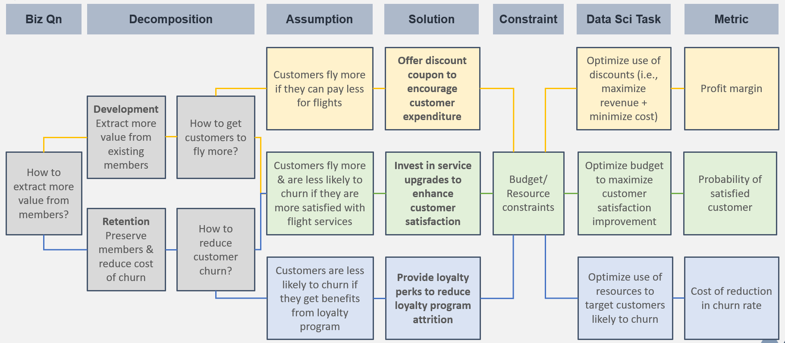
Import Libraries and Datasets
Load Required Packages
Define Helper Functions and Constants
# constant
RANDOM_STATE = 42# calculate months between 2 dates
def calculate_month_interval(start_time, end_time):
return (end_time.year - start_time.year)*12 + (end_time.month - start_time.month)# Confusion matrix
def cf_matrix_labels(cf_matrix):
group_names = ['True Negatives','False Positives','False Negatives','True Positives']
group_counts = ['{0:0.0f}'.format(value) for value in cf_matrix.flatten()]
group_percentages = ['{0:.2%}'.format(value) for value in cf_matrix.flatten()/np.sum(cf_matrix)]
labels = [f'{v1}\n{v2}\n{v3}' for v1, v2, v3 in zip(group_names,group_counts,group_percentages)]
labels = np.asarray(labels).reshape(2,2)
return labels# customize classification report
def get_classification_report(y_true, proba_pred):
precision, recall, threshold = metrics.precision_recall_curve(y_true, proba_pred)
report_df = pd.DataFrame({
'threshold': threshold,
'precision': precision[:-1],
'recall': recall[:-1]
}).assign(
f1 = lambda x: 2 * x['recall'] * x['precision'] / (x['recall'] + x['precision']),
f2 = lambda x: (5 * x['precision'] * x['recall']) / (4 * x['precision'] + x['recall'])
)
fig = plt.figure(figsize=(7,7))
plt.plot(report_df['threshold'], report_df['precision'], label = 'precision')
plt.plot(report_df['threshold'], report_df['recall'], label = 'recall')
# plt.plot(report_df['threshold'], report_df['f1'], '--', color='brown', label = 'f1')
plt.plot(report_df['threshold'], report_df['f2'], '--', color='green', label = 'f2')
plt.xlabel('threshold')
plt.ylabel('score')
plt.legend(loc='upper center')
plt.show()
return report_dfImport Data
Loyalty History
loyalty_df = pd.read_csv('data/Customer Loyalty History.csv')
loyalty_df.columnsIndex(['Loyalty Number', 'Country', 'Province', 'City', 'Postal Code',
'Gender', 'Education', 'Salary', 'Marital Status', 'Loyalty Card',
'CLV', 'Enrollment Type', 'Enrollment Year', 'Enrollment Month',
'Cancellation Year', 'Cancellation Month'],
dtype='object')# remove all space character in column name
loyalty_new_cols = [col.replace(' ', '') for col in loyalty_df.columns]
loyalty_df = loyalty_df.rename(columns=dict(zip(loyalty_df.columns, loyalty_new_cols)))
loyalty_df.info()
loyalty_df.head()
print('No. of unique customers:', loyalty_df['LoyaltyNumber'].nunique())<class 'pandas.core.frame.DataFrame'>
RangeIndex: 16737 entries, 0 to 16736
Data columns (total 16 columns):
# Column Non-Null Count Dtype
--- ------ -------------- -----
0 LoyaltyNumber 16737 non-null int64
1 Country 16737 non-null object
2 Province 16737 non-null object
3 City 16737 non-null object
4 PostalCode 16737 non-null object
5 Gender 16737 non-null object
6 Education 16737 non-null object
7 Salary 12499 non-null float64
8 MaritalStatus 16737 non-null object
9 LoyaltyCard 16737 non-null object
10 CLV 16737 non-null float64
11 EnrollmentType 16737 non-null object
12 EnrollmentYear 16737 non-null int64
13 EnrollmentMonth 16737 non-null int64
14 CancellationYear 2067 non-null float64
15 CancellationMonth 2067 non-null float64
dtypes: float64(4), int64(3), object(9)
memory usage: 2.0+ MB
No. of unique customers: 16737Flight Activity
flight_df = pd.read_csv('data/Customer Flight Activity.csv')
flight_df.columnsIndex(['Loyalty Number', 'Year', 'Month', 'Flights Booked',
'Flights with Companions', 'Total Flights', 'Distance',
'Points Accumulated', 'Points Redeemed', 'Dollar Cost Points Redeemed'],
dtype='object')flight_new_col = [col.replace(' ','') for col in flight_df.columns]
flight_df = flight_df.rename(columns = dict(zip(flight_df.columns,flight_new_col)))
flight_df.info()
print(' ')
flight_df.head()
print(' ')
print('No. of recorded flights: ', len(flight_df))<class 'pandas.core.frame.DataFrame'>
RangeIndex: 405624 entries, 0 to 405623
Data columns (total 10 columns):
# Column Non-Null Count Dtype
--- ------ -------------- -----
0 LoyaltyNumber 405624 non-null int64
1 Year 405624 non-null int64
2 Month 405624 non-null int64
3 FlightsBooked 405624 non-null int64
4 FlightswithCompanions 405624 non-null int64
5 TotalFlights 405624 non-null int64
6 Distance 405624 non-null int64
7 PointsAccumulated 405624 non-null float64
8 PointsRedeemed 405624 non-null int64
9 DollarCostPointsRedeemed 405624 non-null int64
dtypes: float64(1), int64(9)
memory usage: 30.9 MB
No. of recorded flights: 405624Data Preparation
Preliminary Data Cleaning
Loyalty History
Summary:
Convert data type of LoyaltyNumber, CancellationYear, CancellationMonth
Process salary colunn: consider negative salary as missing values, fill all missing values with 0
Create 4 columns: EnrollmentDate, EnrollmentYearMonth (YYYY-MM), CancellationDate, CancellationYearMonth (YYYY-MM)
Create ChurnIndicator
Correcting Data Type
# convert data type
loyalty_df = loyalty_df.assign(
LoyaltyNumber = lambda x: x['LoyaltyNumber'].astype(str),
CancellationYear = lambda x: x['CancellationYear'].astype('Int64'),
CancellationMonth = lambda x: x['CancellationMonth'].astype('Int64')
)Checking Numeric Columns
loyalty_df.describe()| Salary | CLV | EnrollmentYear | EnrollmentMonth | CancellationYear | CancellationMonth | |
|---|---|---|---|---|---|---|
| count | 12499.000000 | 16737.000000 | 16737.000000 | 16737.000000 | 2067.0 | 2067.0 |
| mean | 79245.609409 | 7988.896536 | 2015.253211 | 6.669116 | 2016.503145 | 6.962748 |
| std | 35008.297285 | 6860.982280 | 1.979111 | 3.398958 | 1.380743 | 3.455297 |
| min | -58486.000000 | 1898.010000 | 2012.000000 | 1.000000 | 2013.0 | 1.0 |
| 25% | 59246.500000 | 3980.840000 | 2014.000000 | 4.000000 | 2016.0 | 4.0 |
| 50% | 73455.000000 | 5780.180000 | 2015.000000 | 7.000000 | 2017.0 | 7.0 |
| 75% | 88517.500000 | 8940.580000 | 2017.000000 | 10.000000 | 2018.0 | 10.0 |
| max | 407228.000000 | 83325.380000 | 2018.000000 | 12.000000 | 2018.0 | 12.0 |
# records with negative salary
print('Number of records with negative salary:', loyalty_df[loyalty_df['Salary'].le(0)].shape[0])
loyalty_df[loyalty_df['Salary'].le(0)]Number of records with negative salary: 20| LoyaltyNumber | Country | Province | City | PostalCode | ... | EnrollmentType | EnrollmentYear | EnrollmentMonth | CancellationYear | CancellationMonth | |
|---|---|---|---|---|---|---|---|---|---|---|---|
| 1082 | 542976 | Canada | Quebec | Montreal | H2Y 4R4 | ... | 2018 Promotion | 2018 | 3 | <NA> | <NA> |
| 1894 | 959977 | Canada | British Columbia | Vancouver | V5R 1W3 | ... | 2018 Promotion | 2018 | 3 | <NA> | <NA> |
| 2471 | 232755 | Canada | British Columbia | Vancouver | V1E 4R6 | ... | 2018 Promotion | 2018 | 3 | <NA> | <NA> |
| 3575 | 525245 | Canada | British Columbia | Victoria | V10 6T5 | ... | 2018 Promotion | 2018 | 3 | <NA> | <NA> |
| 3932 | 603070 | Canada | British Columbia | West Vancouver | V6V 8Z3 | ... | 2018 Promotion | 2018 | 3 | <NA> | <NA> |
| 4712 | 491242 | Canada | British Columbia | Dawson Creek | U5I 4F1 | ... | 2018 Promotion | 2018 | 3 | <NA> | <NA> |
| 6560 | 115505 | Canada | Newfoundland | St. John's | A1C 6H9 | ... | 2018 Promotion | 2018 | 4 | <NA> | <NA> |
| 6570 | 430398 | Canada | Newfoundland | St. John's | A1C 6H9 | ... | 2018 Promotion | 2018 | 3 | <NA> | <NA> |
| 7373 | 152016 | Canada | Ontario | Toronto | P1J 8T7 | ... | 2018 Promotion | 2018 | 2 | <NA> | <NA> |
| 8576 | 194065 | Canada | Ontario | Sudbury | M5V 1G5 | ... | 2018 Promotion | 2018 | 2 | <NA> | <NA> |
| 8767 | 212128 | Canada | Ontario | Toronto | P2T 6G3 | ... | 2018 Promotion | 2018 | 2 | <NA> | <NA> |
| 10232 | 790475 | Canada | Ontario | Trenton | K8V 4B2 | ... | 2018 Promotion | 2018 | 2 | <NA> | <NA> |
| 11635 | 366599 | Canada | Ontario | Toronto | M1R 4K3 | ... | 2018 Promotion | 2018 | 4 | <NA> | <NA> |
| 12596 | 436087 | Canada | Quebec | Montreal | H2T 9K8 | ... | 2018 Promotion | 2018 | 4 | 2018 | 8 |
| 13564 | 364596 | Canada | Quebec | Tremblant | H5Y 2S9 | ... | 2018 Promotion | 2018 | 4 | 2018 | 12 |
| 14327 | 239955 | Canada | Quebec | Hull | J8Y 3Z5 | ... | 2018 Promotion | 2018 | 3 | <NA> | <NA> |
| 14355 | 347013 | Canada | Quebec | Quebec City | G1B 3L5 | ... | 2018 Promotion | 2018 | 3 | <NA> | <NA> |
| 15416 | 729561 | Canada | Quebec | Quebec City | G1B 3L5 | ... | 2018 Promotion | 2018 | 2 | <NA> | <NA> |
| 16431 | 734647 | Canada | Saskatchewan | Regina | S1J 3C5 | ... | 2018 Promotion | 2018 | 4 | <NA> | <NA> |
| 16735 | 906428 | Canada | Yukon | Whitehorse | Y2K 6R0 | ... | 2018 Promotion | 2018 | 4 | <NA> | <NA> |
20 rows × 16 columns
# records with missing salary
print(
'Number of records with missing salary:', loyalty_df['Salary'].isna().sum(),
'\nPercentage of records with missing salary:', round(loyalty_df['Salary'].isna().sum()*100/loyalty_df.shape[0],2), '%'
)Number of records with missing salary: 4238
Percentage of records with missing salary: 25.32 %# treat negative salary as missing values, fill all missing salary with 0
loyalty_df['Salary'] = loyalty_df['Salary'].fillna(0).where(loyalty_df['Salary'].gt(0), 0)
print('Number of records with salary = 0:', loyalty_df['Salary'].eq(0).sum())Number of records with salary = 0: 4258Time column
# EnrollmentDate (type: datetime), EnrollmentYearMonth (type: string, format: YYYY-MM)
# CancellationDate (type: datetime), CancellationYearMonth (type: string, format: YYYY-MM)
time_membership = ['Enrollment', 'Cancellation']
for i in time_membership:
loyalty_df[f'{i}Date'] = pd.to_datetime(
loyalty_df[[f'{i}Year', f'{i}Month']].astype('Float64')\
.rename(columns={f'{i}Year': 'YEAR', f'{i}Month': 'MONTH'}).assign(DAY=1)
)
loyalty_df[f'{i}YearMonth'] = loyalty_df[f'{i}Date'].dt.strftime('%Y-%m')
loyalty_df.head()| LoyaltyNumber | Country | Province | City | PostalCode | ... | CancellationMonth | EnrollmentDate | EnrollmentYearMonth | CancellationDate | CancellationYearMonth | |
|---|---|---|---|---|---|---|---|---|---|---|---|
| 0 | 480934 | Canada | Ontario | Toronto | M2Z 4K1 | ... | <NA> | 2016-02-01 | 2016-02 | NaT | NaN |
| 1 | 549612 | Canada | Alberta | Edmonton | T3G 6Y6 | ... | <NA> | 2016-03-01 | 2016-03 | NaT | NaN |
| 2 | 429460 | Canada | British Columbia | Vancouver | V6E 3D9 | ... | 1 | 2014-07-01 | 2014-07 | 2018-01-01 | 2018-01 |
| 3 | 608370 | Canada | Ontario | Toronto | P1W 1K4 | ... | <NA> | 2013-02-01 | 2013-02 | NaT | NaN |
| 4 | 530508 | Canada | Quebec | Hull | J8Y 3Z5 | ... | <NA> | 2014-10-01 | 2014-10 | NaT | NaN |
5 rows × 20 columns
Churn Indicator
loyalty_df['ChurnIndicator'] = np.where(loyalty_df['CancellationMonth'].isna().eq(False), 1, 0)loyalty_df.head()| LoyaltyNumber | Country | Province | City | PostalCode | ... | EnrollmentDate | EnrollmentYearMonth | CancellationDate | CancellationYearMonth | ChurnIndicator | |
|---|---|---|---|---|---|---|---|---|---|---|---|
| 0 | 480934 | Canada | Ontario | Toronto | M2Z 4K1 | ... | 2016-02-01 | 2016-02 | NaT | NaN | 0 |
| 1 | 549612 | Canada | Alberta | Edmonton | T3G 6Y6 | ... | 2016-03-01 | 2016-03 | NaT | NaN | 0 |
| 2 | 429460 | Canada | British Columbia | Vancouver | V6E 3D9 | ... | 2014-07-01 | 2014-07 | 2018-01-01 | 2018-01 | 1 |
| 3 | 608370 | Canada | Ontario | Toronto | P1W 1K4 | ... | 2013-02-01 | 2013-02 | NaT | NaN | 0 |
| 4 | 530508 | Canada | Quebec | Hull | J8Y 3Z5 | ... | 2014-10-01 | 2014-10 | NaT | NaN | 0 |
5 rows × 21 columns
Flight Activity
Summary:
Convert data type of LoyaltyNumber
Create 2 columns: Date, YearMonth
Converting Data Type
flight_df['LoyaltyNumber'] = flight_df['LoyaltyNumber'].astype(str)Checking Numeric Columns
flight_df.describe()| Year | Month | FlightsBooked | FlightswithCompanions | TotalFlights | Distance | PointsAccumulated | PointsRedeemed | DollarCostPointsRedeemed | |
|---|---|---|---|---|---|---|---|---|---|
| count | 405624.000000 | 405624.000000 | 405624.000000 | 405624.000000 | 405624.000000 | 405624.000000 | 405624.000000 | 405624.000000 | 405624.000000 |
| mean | 2017.500000 | 6.500000 | 4.115052 | 1.031805 | 5.146858 | 1208.880059 | 123.692721 | 30.696872 | 2.484503 |
| std | 0.500001 | 3.452057 | 5.225518 | 2.076869 | 6.521227 | 1433.155320 | 146.599831 | 125.486049 | 10.150038 |
| min | 2017.000000 | 1.000000 | 0.000000 | 0.000000 | 0.000000 | 0.000000 | 0.000000 | 0.000000 | 0.000000 |
| 25% | 2017.000000 | 3.750000 | 0.000000 | 0.000000 | 0.000000 | 0.000000 | 0.000000 | 0.000000 | 0.000000 |
| 50% | 2017.500000 | 6.500000 | 1.000000 | 0.000000 | 1.000000 | 488.000000 | 50.000000 | 0.000000 | 0.000000 |
| 75% | 2018.000000 | 9.250000 | 8.000000 | 1.000000 | 10.000000 | 2336.000000 | 239.000000 | 0.000000 | 0.000000 |
| max | 2018.000000 | 12.000000 | 21.000000 | 11.000000 | 32.000000 | 6293.000000 | 676.500000 | 876.000000 | 71.000000 |
From a cursory look, there does not seem to be any abnormality.
Time Column
flight_df['Date'] = pd.to_datetime(flight_df[['Year', 'Month']].assign(DAY=1))
flight_df['YearMonth'] = flight_df['Date'].dt.strftime('%Y-%m')Feature Engineering
Customer Level
# Number of months of membership
loyalty_df = loyalty_df.assign(
ObservationDate = lambda x: x['CancellationDate'].where(x['CancellationDate'].isna().eq(False), flight_df['Date'].max()),
MonthsOfMembership = lambda x: x.apply(lambda z: calculate_month_interval(z['EnrollmentDate'], z['ObservationDate']), axis=1)
).drop(columns='ObservationDate')# Aggregation on flight activity (sum)
flight_cols = [col for col in flight_df.columns if flight_df[col].dtype in ['int64', 'float64']][2:]
temp_total_flight = flight_df.groupby(by='LoyaltyNumber', sort=False)[flight_cols].sum()
temp_total_flight.columns = [f'Total{col}' for col in flight_cols]
temp_total_flight| TotalFlightsBooked | TotalFlightswithCompanions | TotalTotalFlights | TotalDistance | TotalPointsAccumulated | TotalPointsRedeemed | TotalDollarCostPointsRedeemed | |
|---|---|---|---|---|---|---|---|
| LoyaltyNumber | |||||||
| 100018 | 157 | 35 | 192 | 50682 | 5376.00 | 1513 | 123 |
| 100102 | 173 | 42 | 215 | 40222 | 4115.25 | 1195 | 96 |
| 100140 | 152 | 38 | 190 | 41252 | 4184.25 | 593 | 48 |
| 100214 | 79 | 17 | 96 | 33982 | 3426.00 | 861 | 70 |
| 100272 | 127 | 36 | 163 | 40872 | 4108.04 | 1007 | 82 |
| ... | ... | ... | ... | ... | ... | ... | ... |
| 998972 | 80 | 24 | 104 | 31676 | 3164.00 | 2201 | 178 |
| 999304 | 46 | 5 | 51 | 10662 | 1065.00 | 809 | 65 |
| 999731 | 57 | 16 | 73 | 15598 | 1555.00 | 407 | 33 |
| 999788 | 42 | 16 | 58 | 15784 | 1575.00 | 361 | 29 |
| 999891 | 1 | 1 | 2 | 2526 | 252.00 | 414 | 34 |
16737 rows × 7 columns
# Percentage of Redeemed Points / Accumulated Points
temp_total_flight['PercentagePointsRedeemed'] = temp_total_flight['TotalPointsRedeemed'].where(
temp_total_flight['TotalPointsRedeemed'].eq(0),
temp_total_flight['TotalPointsRedeemed'].div(temp_total_flight['TotalPointsAccumulated']).round(2)
)
temp_total_flight['PercentagePointsRedeemed'].describe()count 16737.000000
mean 0.231936
std 0.277969
min 0.000000
25% 0.000000
50% 0.190000
75% 0.350000
max 5.200000
Name: PercentagePointsRedeemed, dtype: float64# Aggregation on flight activity (Monthly average)
temp_monthly_flight = temp_total_flight[['TotalTotalFlights', 'TotalPointsAccumulated']].merge(
loyalty_df[['LoyaltyNumber', 'MonthsOfMembership']].set_index('LoyaltyNumber'),
how='left', left_index=True, right_index=True
).assign(
MonthlyTotalFlights = lambda x: x['MonthsOfMembership'].where(x['MonthsOfMembership'].eq(0),
x['TotalTotalFlights'].div(x['MonthsOfMembership']).round(2)),
MonthlyPointsAccumulated = lambda x: x['MonthsOfMembership'].where(x['MonthsOfMembership'].eq(0),
x['TotalPointsAccumulated'].div(x['MonthsOfMembership']).round(2))
).iloc[:, 3:]
temp_monthly_flight.describe()| MonthlyTotalFlights | MonthlyPointsAccumulated | |
|---|---|---|
| count | 16737.000000 | 16737.000000 |
| mean | 5.160505 | 123.283008 |
| std | 9.252993 | 221.768018 |
| min | 0.000000 | 0.000000 |
| 25% | 2.430000 | 58.880000 |
| 50% | 3.790000 | 91.390000 |
| 75% | 6.250000 | 150.720000 |
| max | 223.000000 | 5176.500000 |
Merge all feature sets to loyalty_df
loyalty_df = loyalty_df.merge(temp_total_flight.reset_index(), how='left', on='LoyaltyNumber')\
.merge(temp_monthly_flight.reset_index(), how='left', on='LoyaltyNumber')loyalty_df.head()| LoyaltyNumber | Country | Province | City | PostalCode | ... | TotalPointsRedeemed | TotalDollarCostPointsRedeemed | PercentagePointsRedeemed | MonthlyTotalFlights | MonthlyPointsAccumulated | |
|---|---|---|---|---|---|---|---|---|---|---|---|
| 0 | 480934 | Canada | Ontario | Toronto | M2Z 4K1 | ... | 1418 | 115 | 0.27 | 5.03 | 153.66 |
| 1 | 549612 | Canada | Alberta | Edmonton | T3G 6Y6 | ... | 1971 | 159 | 0.47 | 6.52 | 126.55 |
| 2 | 429460 | Canada | British Columbia | Vancouver | V6E 3D9 | ... | 374 | 30 | 0.19 | 2.07 | 46.74 |
| 3 | 608370 | Canada | Ontario | Toronto | P1W 1K4 | ... | 1291 | 105 | 0.36 | 2.27 | 51.81 |
| 4 | 530508 | Canada | Quebec | Hull | J8Y 3Z5 | ... | 0 | 0 | 0.00 | 3.52 | 73.79 |
5 rows × 32 columns
Flight Level
flight_df = flight_df.sort_values(by=['Date', 'LoyaltyNumber'])#.set_index('LoyaltyNumber')
TIME_INDEX = pd.DatetimeIndex(flight_df['Date'])# Aggregation of flight stats for 1 year, 6 months, 3 months and 1 month lookback
lookback_period = {
'1Y': '366D',
'6M': '183D',
'3M': '93D',
'1M': '31D',
}
temp_lookback_flight_dfs = []
for last, day in lookback_period.items():
df = flight_df.groupby(by='LoyaltyNumber', sort=False)[flight_cols]\
.rolling(window=day, on=TIME_INDEX, closed='left').sum()\
.reset_index().sort_values(by=['Date', 'LoyaltyNumber'])\
.drop(columns='level_1').set_index(['LoyaltyNumber', 'Date'])
df.columns = [f'Last{last}_{col}' for col in flight_cols]
temp_lookback_flight_dfs.append(df)
lookback_flight_df = flight_df[['LoyaltyNumber', 'Date']]
for df in temp_lookback_flight_dfs:
lookback_flight_df = lookback_flight_df.merge(df.reset_index(), how='left', on=['LoyaltyNumber', 'Date'])
lookback_flight_df| LoyaltyNumber | Date | Last1Y_FlightsBooked | Last1Y_FlightswithCompanions | Last1Y_TotalFlights | ... | Last1M_TotalFlights | Last1M_Distance | Last1M_PointsAccumulated | Last1M_PointsRedeemed | Last1M_DollarCostPointsRedeemed | |
|---|---|---|---|---|---|---|---|---|---|---|---|
| 0 | 100018 | 2017-01-01 | NaN | NaN | NaN | ... | NaN | NaN | NaN | NaN | NaN |
| 1 | 100102 | 2017-01-01 | NaN | NaN | NaN | ... | NaN | NaN | NaN | NaN | NaN |
| 2 | 100140 | 2017-01-01 | NaN | NaN | NaN | ... | NaN | NaN | NaN | NaN | NaN |
| 3 | 100214 | 2017-01-01 | NaN | NaN | NaN | ... | NaN | NaN | NaN | NaN | NaN |
| 4 | 100272 | 2017-01-01 | NaN | NaN | NaN | ... | NaN | NaN | NaN | NaN | NaN |
| ... | ... | ... | ... | ... | ... | ... | ... | ... | ... | ... | ... |
| 528019 | 999902 | 2018-12-01 | 87.0 | 15.0 | 102.0 | ... | 0.0 | 0.0 | 0.0 | 0.0 | 0.0 |
| 528020 | 999911 | 2018-12-01 | 0.0 | 0.0 | 0.0 | ... | 0.0 | 0.0 | 0.0 | 0.0 | 0.0 |
| 528021 | 999940 | 2018-12-01 | 51.0 | 18.0 | 69.0 | ... | 17.0 | 3859.0 | 385.0 | 0.0 | 0.0 |
| 528022 | 999982 | 2018-12-01 | 22.0 | 2.0 | 24.0 | ... | 3.0 | 1560.0 | 156.0 | 0.0 | 0.0 |
| 528023 | 999986 | 2018-12-01 | 49.0 | 10.0 | 59.0 | ... | 15.0 | 2040.0 | 204.0 | 0.0 | 0.0 |
528024 rows × 30 columns
Exploratory Data Analysis
Customer Distribution
cust_eda_loyalty_df = loyalty_df.copy()# Confirm that dataset only contains Canadian customers
cust_eda_loyalty_df["Country"].value_counts()Country
Canada 16737
Name: count, dtype: int64Set churn indicator as categorical data
cust_eda_loyalty_df['ChurnIndicator'] = cust_eda_loyalty_df['ChurnIndicator'].astype("category")flights_summary = cust_eda_loyalty_df.groupby('MaritalStatus').agg( {'TotalTotalFlights':['sum'], 'TotalFlightswithCompanions': ['sum']}).reset_index()
# Calculate the percentage of flights with companions
flights_summary['PercentageWithCompanions'] = (flights_summary['TotalFlightswithCompanions'] / flights_summary['TotalTotalFlights']) * 100
# Display the summary DataFrame
print(flights_summary) MaritalStatus TotalTotalFlights TotalFlightswithCompanions \
sum sum
0 Divorced 311069 62289
1 Married 1213745 243295
2 Single 562875 112941
PercentageWithCompanions
0 20.024175
1 20.044985
2 20.065023 Salary Distribution
plt.figure(figsize=(6, 9))
sns.boxplot(data=cust_eda_loyalty_df, y='Salary', palette='viridis')
plt.title('Salary Distribution')
plt.ylabel('Salary')
plt.xticks(rotation=45)
plt.show()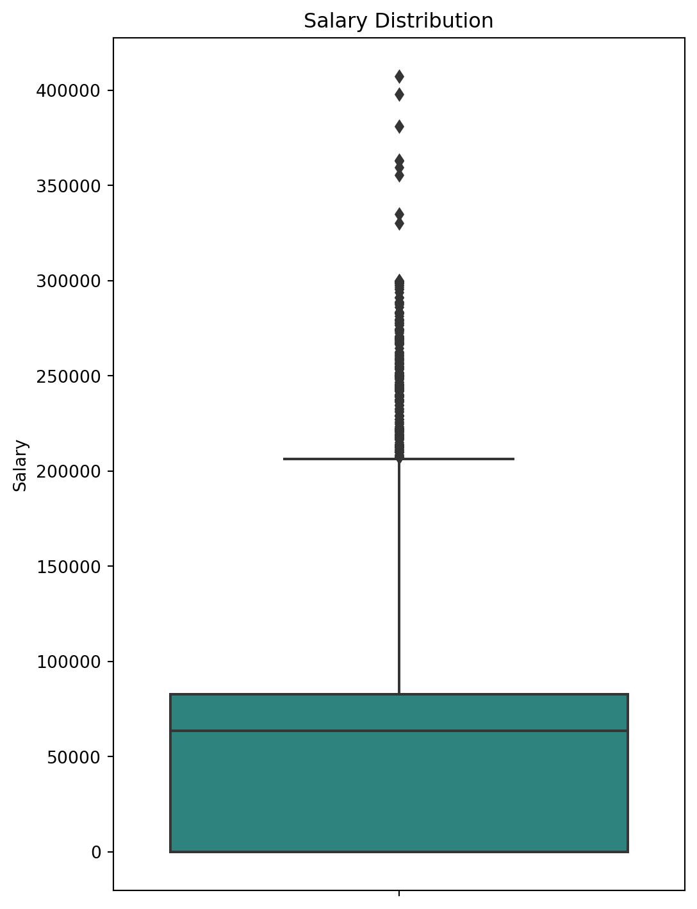
Gender Distribution
# Check distribution by gender
x = 'Gender'
label = 'Gender'
order = ["Female","Male"]
rows, cols = 5, 3
# Calculate total flights booked by gender
total_flights = cust_eda_loyalty_df.groupby(x)['TotalTotalFlights'].sum().reset_index()
total_flights.Gender = total_flights.Gender.astype("category")
total_flights.Gender = total_flights.Gender.cat.set_categories(order)
total_flights.sort_values([x])
# Calculate proportion of churned customers by education level
churn_proportions = cust_eda_loyalty_df.groupby(x)['ChurnIndicator'].value_counts(normalize=True).unstack().fillna(0)
churn_proportions.columns = ['Not Churn', 'Churn']
churn_proportions['Not Churn'] *= 100
churn_proportions['Churn'] *= 100
churn_proportions.sort_values('Churn', ascending=False, inplace=True)
# Focus on months of membership between 0 to 12 months
mom12 = cust_eda_loyalty_df[(loyalty_df['MonthsOfMembership'] >= 0) & (loyalty_df['MonthsOfMembership'] <= 12)]
mom12[x] = pd.Categorical(mom12[x], categories=order, ordered=True)
mom12 = mom12.sort_values(x)
# Create custom colour mapping to each gender
colour = {'Female': 'salmon', 'Male': 'skyblue'}
# Define plot area
fig, axs = plt.subplots(nrows = rows, ncols = cols, figsize=(20,25))
# Create plots
plt.subplot(rows, cols, 1)
sns.countplot(data=cust_eda_loyalty_df, x=x, hue=x, palette=colour)
plt.title(f'Frequency of Customers by {label}')
plt.xlabel(label)
plt.ylabel('Count')
plt.legend([], [], frameon=False)
plt.subplot(rows, cols, 2)
sns.boxplot(data=cust_eda_loyalty_df, x=x, y='Salary', hue=x, palette=colour)
plt.title(f'Distribution of Salary by {label}')
plt.xlabel(label)
plt.ylabel('Salary')
plt.legend([], [], frameon=False)
plt.subplot(rows, cols, 3)
sns.boxplot(data=cust_eda_loyalty_df, x=x, y='CLV', hue=x, palette=colour)
plt.title(f'Distribution of CLV by {label}')
plt.xlabel(label)
plt.ylabel('CLV')
plt.legend([], [], frameon=False)
plt.subplot(rows, cols, 4)
sns.boxplot(data=cust_eda_loyalty_df, x=x, y='MonthsOfMembership', hue=x, palette=colour)
plt.title(f'Distribution of Membership Length (Months) by {label}')
plt.xlabel(label)
plt.ylabel('Membership Length (Months)')
plt.legend([], [], frameon=False)
plt.subplot(rows, cols, 5)
sns.boxplot(data=cust_eda_loyalty_df, x=x, y='TotalFlightsBooked', hue=x, palette=colour)
plt.title(f'Distribution of Individual Flights by {label}')
plt.xlabel(label)
plt.ylabel('Total Individual Flights Booked')
plt.legend([], [], frameon=False)
plt.subplot(rows, cols, 6)
sns.boxplot(data=cust_eda_loyalty_df, x=x, y='TotalFlightswithCompanions', hue=x, palette=colour)
plt.title(f'Distribution of Flights with Companions by {label}')
plt.xlabel(label)
plt.ylabel('Total Flights with Companions Flights Booked')
plt.legend([], [], frameon=False)
plt.subplot(rows, cols, 7)
sns.boxplot(data=cust_eda_loyalty_df, x=x, y='TotalTotalFlights', hue=x, palette=colour)
plt.title(f'Distribution of Total Flights by {label}')
plt.xlabel(label)
plt.ylabel('Total Flights Booked')
plt.legend([], [], frameon=False)
plt.subplot(rows, cols, 8)
sns.boxplot(data=cust_eda_loyalty_df, x=x, y='TotalDistance', hue=x, palette=colour)
plt.title(f'Distribution of Total Distance Travelled by {label}')
plt.xlabel(label)
plt.ylabel('Total Distance')
plt.legend([], [], frameon=False)
plt.subplot(rows, cols, 9)
sns.boxplot(data=cust_eda_loyalty_df, x=x, y='PercentagePointsRedeemed', hue=x, order=order, palette=colour)
plt.title(f'Distribution of Points Redeemed by {label}')
plt.xlabel(label)
plt.ylabel('Points Redeemed (%)')
plt.legend([], [], frameon=False)
plt.subplot(rows, cols, 10)
sns.countplot(data=cust_eda_loyalty_df, x=x, hue='ChurnIndicator', palette="viridis")
plt.title(f'Frequency of Churn by {label}')
plt.xlabel(label)
plt.ylabel('Churn Frequency')
plt.legend(title='Churn Indicator', loc='upper right')
churn_proportions.plot(kind='bar', stacked=True, ax = axs[3,1], color=['steelblue', 'mediumseagreen'])
axs[3,1].set(title = f'Proportion of Churn by {label}',
xlabel = label,
ylabel = 'Churn Proportion (%)')
axs[3,1].set_xticklabels(axs[3,1].get_xticklabels(), rotation=0)
gs = gridspec.GridSpec(rows, cols, figure=fig)
ax_big = fig.add_subplot(gs[4, 0:])
sns.countplot(data=mom12, x='MonthsOfMembership', hue=x, ax=ax_big, palette=colour)
ax_big.set(title=f'Count of Months of Membership by {label}',
xlabel="Months of Membership",
ylabel='Count')
axs[3,2].set_axis_off()
axs[4,0].set_axis_off()
axs[4,1].set_axis_off()
axs[4,2].set_axis_off()
plt.tight_layout()
plt.show()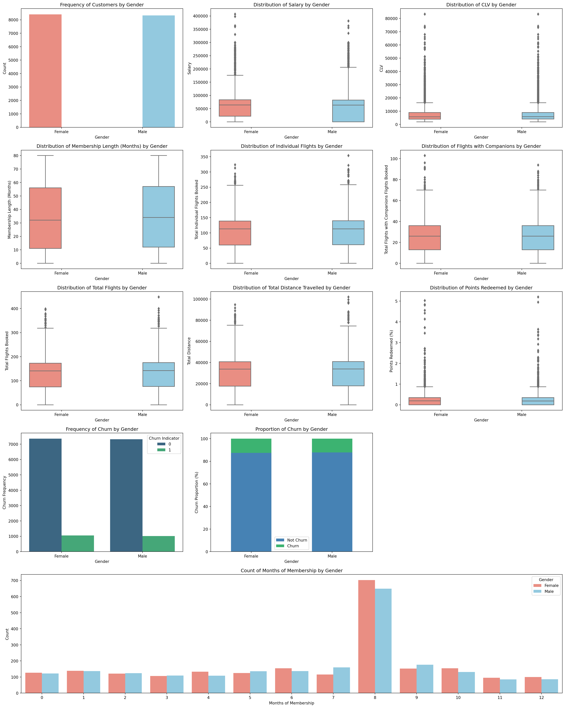
Education Distribution
# Check distribution by education
x = 'Education'
label = 'Education Level'
order = ["Doctor", "Master", "Bachelor", "College", "High School or Below"]
rows, cols = 5, 3
# Calculate total flights booked by education level
total_flights = cust_eda_loyalty_df.groupby(x)['TotalTotalFlights'].sum().reset_index()
total_flights.Education = total_flights.Education.astype("category")
total_flights.Education = total_flights.Education.cat.set_categories(order)
total_flights.sort_values([x])
# Sort education level in cust_eda_loyalty_df in descending order
cust_eda_loyalty_df.Education = cust_eda_loyalty_df.Education.astype("category")
cust_eda_loyalty_df.Education = cust_eda_loyalty_df.Education.cat.set_categories(order)
cust_eda_loyalty_df.sort_values([x])
# Calculate proportion of churned customers by education level
churn_proportions = cust_eda_loyalty_df.groupby(x)['ChurnIndicator'].value_counts(normalize=True).unstack().fillna(0)
churn_proportions.columns = ['Not Churn', 'Churn']
churn_proportions['Not Churn'] *= 100
churn_proportions['Churn'] *= 100
churn_proportions.sort_values('Churn', ascending=False, inplace=True)
# Focus on months of membership between 0 to 12 months
mom12 = cust_eda_loyalty_df[(cust_eda_loyalty_df['MonthsOfMembership'] >= 0) & (cust_eda_loyalty_df['MonthsOfMembership'] <= 12)]
mom12[x] = pd.Categorical(mom12[x], categories=order, ordered=True)
mom12 = mom12.sort_values(x)
# Define plot area
fig, axs = plt.subplots(nrows = rows, ncols = cols, figsize=(20,25))
# Create plots
plt.subplot(rows, cols, 1)
sns.countplot(data=cust_eda_loyalty_df, x=x, hue=x)
plt.title(f'Frequency of Customers by {label}')
plt.xlabel(label)
plt.ylabel('Count')
plt.legend([], [], frameon=False)
plt.subplot(rows, cols, 2)
sns.boxplot(data=cust_eda_loyalty_df, x=x, y='Salary', hue=x)
plt.title(f'Distribution of Salary by {label}')
plt.xlabel(label)
plt.ylabel('Salary')
plt.legend([], [], frameon=False)
plt.subplot(rows, cols, 3)
sns.boxplot(data=cust_eda_loyalty_df, x=x, y='CLV', hue=x)
plt.title(f'Distribution of CLV by {label}')
plt.xlabel(label)
plt.ylabel('CLV')
plt.legend([], [], frameon=False)
plt.subplot(rows, cols, 4)
sns.boxplot(data=cust_eda_loyalty_df, x=x, y='MonthsOfMembership', hue=x)
plt.title(f'Distribution of Membership Length (Months) by {label}')
plt.xlabel(label)
plt.ylabel('Membership Length (Months)')
plt.legend([], [], frameon=False)
plt.subplot(rows, cols, 5)
sns.boxplot(data=cust_eda_loyalty_df, x=x, y='TotalFlightsBooked', hue=x)
plt.title(f'Distribution of Individual Flights by {label}')
plt.xlabel(label)
plt.ylabel('Total Individual Flights Booked')
plt.legend([], [], frameon=False)
plt.subplot(rows, cols, 6)
sns.boxplot(data=cust_eda_loyalty_df, x=x, y='TotalFlightswithCompanions', hue=x)
plt.title(f'Distribution of Flights with Companions by {label}')
plt.xlabel(label)
plt.ylabel('Total Flights with Companions Flights Booked')
plt.legend([], [], frameon=False)
plt.subplot(rows, cols, 7)
sns.boxplot(data=cust_eda_loyalty_df, x=x, y='TotalTotalFlights', hue=x)
plt.title(f'Distribution of Total Flights by {label}')
plt.xlabel(label)
plt.ylabel('Total Flights Booked')
plt.legend([], [], frameon=False)
plt.subplot(rows, cols, 8)
sns.boxplot(data=cust_eda_loyalty_df, x=x, y='TotalDistance', hue=x)
plt.title(f'Distribution of Total Distance Travelled by {label}')
plt.xlabel(label)
plt.ylabel('Total Distance')
plt.legend([], [], frameon=False)
plt.subplot(rows, cols, 9)
sns.boxplot(data=cust_eda_loyalty_df, x=x, y='PercentagePointsRedeemed', hue=x, order=order)
plt.title(f'Distribution of Points Redeemed by {label}')
plt.xlabel(label)
plt.ylabel('Points Redeemed (%)')
plt.legend([], [], frameon=False)
plt.subplot(rows, cols, 10)
sns.countplot(data=cust_eda_loyalty_df, x=x, hue='ChurnIndicator', palette="viridis")
plt.title(f'Frequency of Churn by {label}')
plt.xlabel(label)
plt.ylabel('Churn Frequency')
plt.legend(title='Churn Indicator', loc='upper right')
churn_proportions.plot(kind='bar', stacked=True, ax = axs[3,1], color=['steelblue', 'mediumseagreen'])
axs[3,1].set(title = f'Proportion of Churn by {label}',
xlabel = label,
ylabel = 'Churn Proportion (%)')
axs[3,1].set_xticklabels(axs[3,1].get_xticklabels(), rotation=0)
gs = gridspec.GridSpec(rows, cols, figure=fig)
ax_big = fig.add_subplot(gs[4, 0:])
sns.countplot(data=mom12, x='MonthsOfMembership', hue=x, ax=ax_big)
ax_big.set(title=f'Count of Months of Membership by {label}',
xlabel="Months of Membership",
ylabel='Count')
axs[3,2].set_axis_off()
axs[4,0].set_axis_off()
axs[4,1].set_axis_off()
axs[4,2].set_axis_off()
plt.tight_layout()
plt.show()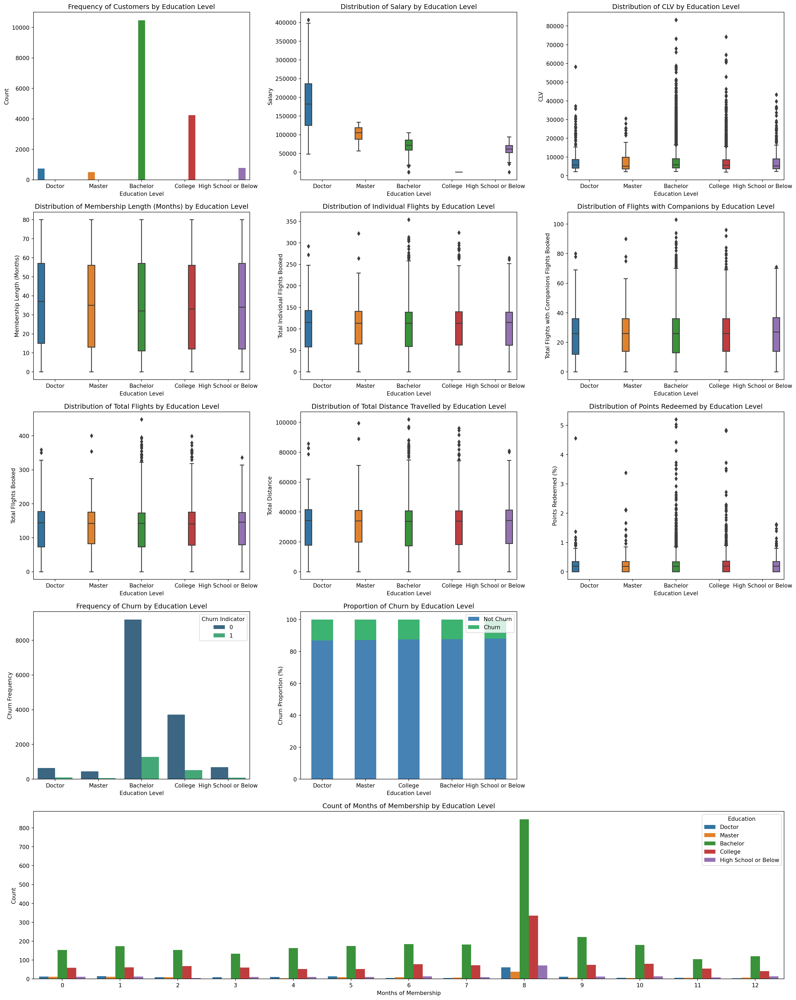
Loyalty Card Distribution
# Check distribution by loyalty card type
x = 'LoyaltyCard'
label = "Loyalty Card"
order = ["Star", "Nova", "Aurora"]
rows, cols = 5, 3
# Calculate total flights booked by loyalty card type
total_flights = cust_eda_loyalty_df.groupby(x)['TotalTotalFlights'].sum().reset_index()
total_flights.LoyaltyCard = total_flights.LoyaltyCard.astype("category")
total_flights.LoyaltyCard = total_flights.LoyaltyCard.cat.set_categories(order)
total_flights.sort_values([x])
# Calculate proportion of churned customers by loyalty card type
churn_proportions = cust_eda_loyalty_df.groupby(x)['ChurnIndicator'].value_counts(normalize=True).unstack().fillna(0)
churn_proportions.columns = ['Not Churn', 'Churn']
churn_proportions['Not Churn'] *= 100
churn_proportions['Churn'] *= 100
churn_proportions.sort_values('Churn', ascending=False, inplace=True)
# Focus on months of membership between 0 to 12 months
mom12 = cust_eda_loyalty_df[(cust_eda_loyalty_df['MonthsOfMembership'] >= 0) & (cust_eda_loyalty_df['MonthsOfMembership'] <= 12)]
mom12[x] = pd.Categorical(mom12[x], categories=order, ordered=True)
mom12 = mom12.sort_values(x)
# Define plot area
fig, axs = plt.subplots(nrows = rows, ncols = cols, figsize=(20,25))
# Create plots
plt.subplot(rows, cols, 1)
sns.countplot(data=cust_eda_loyalty_df, x=x, hue=x)
plt.title(f'Frequency of Customers by {label}')
plt.xlabel(label)
plt.ylabel('Count')
plt.legend([], [], frameon=False)
plt.subplot(rows, cols, 2)
sns.boxplot(data=cust_eda_loyalty_df, x=x, y='Salary', hue=x)
plt.title(f'Distribution of Salary by {label}')
plt.xlabel(label)
plt.ylabel('Salary')
plt.legend([], [], frameon=False)
plt.subplot(rows, cols, 3)
sns.boxplot(data=cust_eda_loyalty_df, x=x, y='CLV', hue=x)
plt.title(f'Distribution of CLV by {label}')
plt.xlabel(label)
plt.ylabel('CLV')
plt.legend([], [], frameon=False)
plt.subplot(rows, cols, 4)
sns.boxplot(data=cust_eda_loyalty_df, x=x, y='MonthsOfMembership', hue=x)
plt.title(f'Distribution of Membership Length (Months) by {label}')
plt.xlabel(label)
plt.ylabel('Membership Length (Months)')
plt.legend([], [], frameon=False)
plt.subplot(rows, cols, 5)
sns.boxplot(data=cust_eda_loyalty_df, x=x, y='TotalFlightsBooked', hue=x)
plt.title(f'Distribution of Individual Flights by {label}')
plt.xlabel(label)
plt.ylabel('Total Individual Flights Booked')
plt.legend([], [], frameon=False)
plt.subplot(rows, cols, 6)
sns.boxplot(data=cust_eda_loyalty_df, x=x, y='TotalFlightswithCompanions', hue=x)
plt.title(f'Distribution of Flights with Companions by {label}')
plt.xlabel(label)
plt.ylabel('Total Flights with Companions Flights Booked')
plt.legend([], [], frameon=False)
plt.subplot(rows, cols, 7)
sns.boxplot(data=cust_eda_loyalty_df, x=x, y='TotalTotalFlights', hue=x)
plt.title(f'Distribution of Total Flights by {label}')
plt.xlabel(label)
plt.ylabel('Total Flights Booked')
plt.legend([], [], frameon=False)
plt.subplot(rows, cols, 8)
sns.boxplot(data=cust_eda_loyalty_df, x=x, y='TotalDistance', hue=x)
plt.title(f'Distribution of Total Distance Travelled by {label}')
plt.xlabel(label)
plt.ylabel('Total Distance')
plt.legend([], [], frameon=False)
plt.subplot(rows, cols, 9)
sns.boxplot(data=cust_eda_loyalty_df, x=x, y='PercentagePointsRedeemed', hue=x, order=order)
plt.title(f'Distribution of Points Redeemed by {label}')
plt.xlabel(label)
plt.ylabel('Points Redeemed (%)')
plt.legend([], [], frameon=False)
plt.subplot(rows, cols, 10)
sns.countplot(data=cust_eda_loyalty_df, x=x, hue='ChurnIndicator', palette="viridis")
plt.title(f'Frequency of Churn by {label}')
plt.xlabel(label)
plt.ylabel('Churn Frequency')
plt.legend(title='Churn Indicator', loc='upper right')
churn_proportions.plot(kind='bar', stacked=True, ax = axs[3,1], color=['steelblue', 'mediumseagreen'])
axs[3,1].set(title = f'Proportion of Churn by {label}',
xlabel = label,
ylabel = 'Churn Proportion (%)')
axs[3,1].set_xticklabels(axs[3,1].get_xticklabels(), rotation=0)
gs = gridspec.GridSpec(rows, cols, figure=fig)
ax_big = fig.add_subplot(gs[4, 0:])
sns.countplot(data=mom12, x='MonthsOfMembership', hue=x, ax=ax_big)
ax_big.set(title=f'Count of Months of Membership by {label}',
xlabel="Months of Membership",
ylabel='Count')
axs[3,2].set_axis_off()
axs[4,0].set_axis_off()
axs[4,1].set_axis_off()
axs[4,2].set_axis_off()
plt.tight_layout()
plt.show()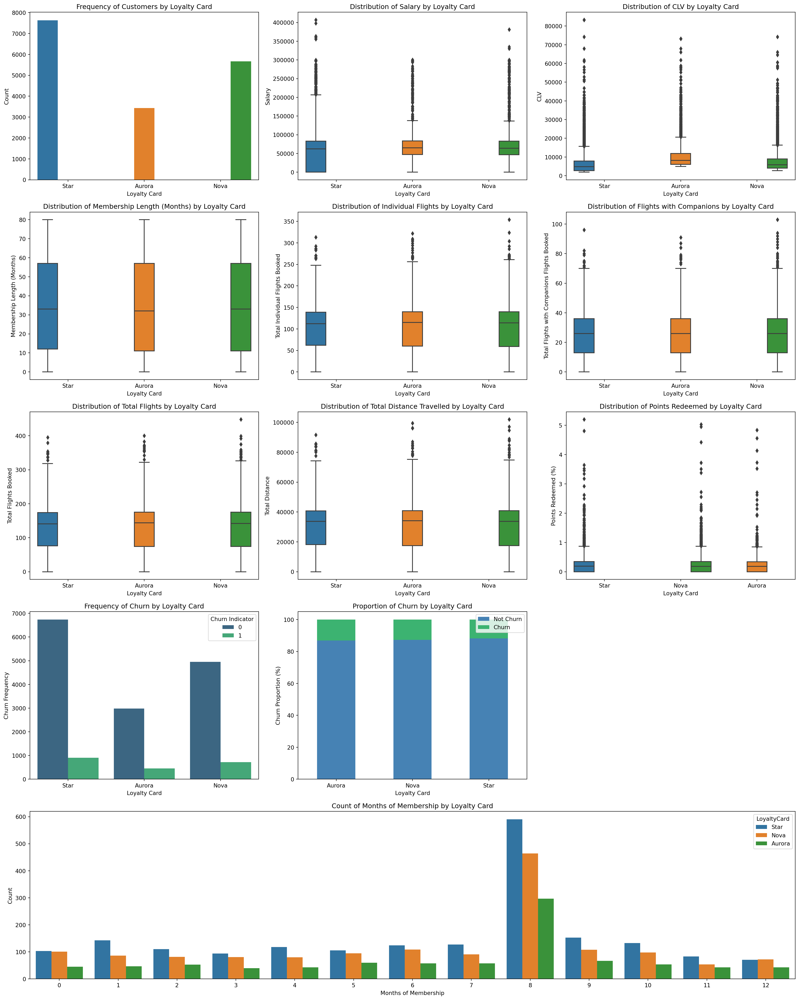
City Distribution
# Check distribution by city
x = 'City'
label = "City"
rows, cols = 5, 3
# Create new df to sort in descending order of median of CLV
median_clv_df = loyalty_df.copy()
median_clv_df["City"] = pd.Categorical(median_clv_df["City"], categories=median_clv_df.groupby("City")['CLV'].median().sort_values(ascending=False).index, ordered=True)
# Calculate frequency of each city and sort in descending order
city_counts = cust_eda_loyalty_df[x].value_counts().reset_index()
city_counts.columns = [x, 'Count']
city_counts = city_counts.sort_values('Count', ascending=False)
order = city_counts[x].to_list()
# Sort city in cust_eda_loyalty_df in descending order of frequency
cust_eda_loyalty_df['City'] = pd.Categorical(cust_eda_loyalty_df['City'], categories=order, ordered=True)
cust_eda_loyalty_df = cust_eda_loyalty_df.sort_values('City')
# Calculate total flights booked by each city
total_flights = cust_eda_loyalty_df.groupby(x)['TotalTotalFlights'].sum().reset_index()
total_flights.City = total_flights.City.astype("category")
total_flights.City = total_flights.City.cat.set_categories(order)
total_flights.sort_values([x])
# Calculate proportion of churned customers by city
churn_proportions = cust_eda_loyalty_df.groupby(x)['ChurnIndicator'].value_counts(normalize=True).unstack().fillna(0)
churn_proportions.columns = ['Not Churn', 'Churn']
churn_proportions['Not Churn'] *= 100
churn_proportions['Churn'] *= 100
churn_proportions.sort_values('Churn', ascending=False, inplace=True)
# Focus on months of membership between 0 to 12 months
mom12 = cust_eda_loyalty_df[(cust_eda_loyalty_df['MonthsOfMembership'] >= 0) & (cust_eda_loyalty_df['MonthsOfMembership'] <= 12)]
mom12[x] = pd.Categorical(mom12[x], categories=order, ordered=True)
mom12 = mom12.sort_values(x)
# Create custom colour mapping to each city
palette = cc.cm.glasbey_dark
colour = [cc.cm.glasbey_dark(i / len(cust_eda_loyalty_df["City"])) for i in range(len(cust_eda_loyalty_df["City"]))]
col_map = {city: col for city, col in zip(cust_eda_loyalty_df['City'], colour)}
# Define plot area
fig, axs = plt.subplots(nrows = rows, ncols = cols, figsize=(30,40))
# Create plots
plt.subplot(rows, cols, 1)
sns.countplot(data=cust_eda_loyalty_df, x=x, hue=x, palette=col_map)
plt.title(f'Frequency of Customers by {label}')
plt.xlabel(label)
plt.ylabel('Count')
plt.legend([], [], frameon=False)
plt.xticks(rotation=80)
plt.subplot(rows, cols, 2)
sns.boxplot(data=cust_eda_loyalty_df, x=x, y='Salary', hue=x, palette=col_map)
plt.title(f'Distribution of Salary by {label}')
plt.xlabel(label)
plt.ylabel('Salary')
plt.legend([], [], frameon=False)
plt.xticks(rotation=80)
plt.subplot(rows, cols, 3)
sns.boxplot(data=median_clv_df, x=x, y='CLV', hue=x, palette=col_map)
plt.title(f'Distribution of CLV by {label}')
plt.xlabel(label)
plt.ylabel('CLV')
plt.legend([], [], frameon=False)
plt.xticks(rotation=80)
plt.subplot(rows, cols, 4)
sns.boxplot(data=cust_eda_loyalty_df, x=x, y='MonthsOfMembership', hue=x, palette=col_map)
plt.title(f'Distribution of Membership Length (Months) by {label}')
plt.xlabel(label)
plt.ylabel('Membership Length (Months)')
plt.legend([], [], frameon=False)
plt.xticks(rotation=80)
plt.subplot(rows, cols, 5)
sns.boxplot(data=cust_eda_loyalty_df, x=x, y='TotalFlightsBooked', hue=x, palette=col_map)
plt.title(f'Distribution of Individual Flights by {label}')
plt.xlabel(label)
plt.ylabel('Total Individual Flights Booked')
plt.legend([], [], frameon=False)
plt.xticks(rotation=80)
plt.subplot(rows, cols, 6)
sns.boxplot(data=cust_eda_loyalty_df, x=x, y='TotalFlightswithCompanions', hue=x, palette=col_map)
plt.title(f'Distribution of Flights with Companions by {label}')
plt.xlabel(label)
plt.ylabel('Total Flights with Companions Flights Booked')
plt.legend([], [], frameon=False)
plt.xticks(rotation=80)
plt.subplot(rows, cols, 7)
sns.boxplot(data=cust_eda_loyalty_df, x=x, y='TotalTotalFlights', hue=x, palette=col_map)
plt.title(f'Distribution of Total Flights by {label}')
plt.xlabel(label)
plt.ylabel('Total Flights Booked')
plt.legend([], [], frameon=False)
plt.xticks(rotation=80)
plt.subplot(rows, cols, 8)
sns.boxplot(data=cust_eda_loyalty_df, x=x, y='TotalDistance', hue=x, palette=col_map)
plt.title(f'Distribution of Total Distance Travelled by {label}')
plt.xlabel(label)
plt.ylabel('Total Distance')
plt.legend([], [], frameon=False)
plt.xticks(rotation=80)
plt.subplot(rows, cols, 9)
sns.boxplot(data=cust_eda_loyalty_df, x=x, y='PercentagePointsRedeemed', hue=x, order=order, palette=col_map)
plt.title(f'Distribution of Points Redeemed by {label}')
plt.xlabel(label)
plt.ylabel('Points Redeemed (%)')
plt.legend([], [], frameon=False)
plt.xticks(rotation=80)
plt.subplot(rows, cols, 10)
sns.countplot(data=cust_eda_loyalty_df, x=x, hue='ChurnIndicator', palette="viridis")
plt.title(f'Frequency of Churn by {label}')
plt.xlabel(label)
plt.ylabel('Churn Frequency')
plt.legend(title='Churn Indicator', loc='upper right')
plt.xticks(rotation=80)
churn_proportions.plot(kind='bar', stacked=True, ax = axs[3,1], color=['steelblue', 'mediumseagreen'])
axs[3,1].set(title = f'Proportion of Churn by {label}',
xlabel = label,
ylabel = 'Churn Proportion (%)')
axs[3,1].set_xticklabels(axs[3,1].get_xticklabels(), rotation=80)
gs = gridspec.GridSpec(rows, cols, figure=fig)
ax_big = fig.add_subplot(gs[4, 0:])
sns.countplot(data=mom12, x='MonthsOfMembership', hue=x, ax=ax_big, palette=col_map)
ax_big.set(title=f'Count of Months of Membership by {label}',
xlabel="Months of Membership",
ylabel='Count')
axs[3,2].set_axis_off()
axs[4,0].set_axis_off()
axs[4,1].set_axis_off()
axs[4,2].set_axis_off()
plt.tight_layout()
plt.show()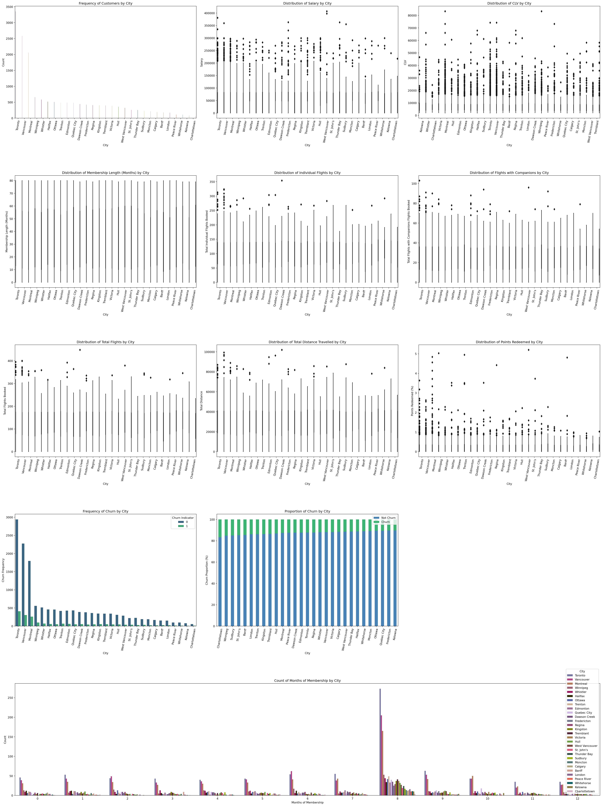
Enrollment Type Distribution
# Distribution by Enrollment Type
x = 'EnrollmentType'
label = "Enrollment Type"
order = ["Standard","2018 Promotion"]
rows, cols = 5, 3
# Calculate total flights booked by enrollment type
total_flights = cust_eda_loyalty_df.groupby(x)['TotalTotalFlights'].sum().reset_index()
total_flights.EnrollmentType = total_flights.EnrollmentType.astype("category")
total_flights.EnrollmentType = total_flights.EnrollmentType.cat.set_categories(order)
total_flights.sort_values([x])
# Calculate proportion of churned customers by enrollment type
churn_proportions = cust_eda_loyalty_df.groupby(x)['ChurnIndicator'].value_counts(normalize=True).unstack().fillna(0)
churn_proportions.columns = ['Not Churn', 'Churn']
churn_proportions['Not Churn'] *= 100
churn_proportions['Churn'] *= 100
churn_proportions.sort_values('Churn', ascending=False, inplace=True)
# Focus on months of membership between 0 to 12 months
mom12 = cust_eda_loyalty_df[(cust_eda_loyalty_df['MonthsOfMembership'] >= 0) & (cust_eda_loyalty_df['MonthsOfMembership'] <= 12)]
mom12[x] = pd.Categorical(mom12[x], categories=order, ordered=True)
mom12 = mom12.sort_values(x)
# Define plot area
fig, axs = plt.subplots(nrows = rows, ncols = cols, figsize=(20,25))
# Create plots
plt.subplot(rows, cols, 1)
sns.countplot(data=cust_eda_loyalty_df, x=x, hue=x)
plt.title(f'Frequency of Customers by {label}')
plt.xlabel(label)
plt.ylabel('Count')
plt.legend([], [], frameon=False)
plt.subplot(rows, cols, 2)
sns.boxplot(data=cust_eda_loyalty_df, x=x, y='Salary', hue=x)
plt.title(f'Distribution of Salary by {label}')
plt.xlabel(label)
plt.ylabel('Salary')
plt.legend([], [], frameon=False)
plt.subplot(rows, cols, 3)
sns.boxplot(data=cust_eda_loyalty_df, x=x, y='CLV', hue=x)
plt.title(f'Distribution of CLV by {label}')
plt.xlabel(label)
plt.ylabel('CLV')
plt.legend([], [], frameon=False)
plt.subplot(rows, cols, 4)
sns.boxplot(data=cust_eda_loyalty_df, x=x, y='MonthsOfMembership', hue=x)
plt.title(f'Distribution of Membership Length (Months) by {label}')
plt.xlabel(label)
plt.ylabel('Membership Length (Months)')
plt.legend([], [], frameon=False)
plt.subplot(rows, cols, 5)
sns.boxplot(data=cust_eda_loyalty_df, x=x, y='TotalFlightsBooked', hue=x)
plt.title(f'Distribution of Individual Flights by {label}')
plt.xlabel(label)
plt.ylabel('Total Individual Flights Booked')
plt.legend([], [], frameon=False)
plt.subplot(rows, cols, 6)
sns.boxplot(data=cust_eda_loyalty_df, x=x, y='TotalFlightswithCompanions', hue=x)
plt.title(f'Distribution of Flights with Companions by {label}')
plt.xlabel(label)
plt.ylabel('Total Flights with Companions Flights Booked')
plt.legend([], [], frameon=False)
plt.subplot(rows, cols, 7)
sns.boxplot(data=cust_eda_loyalty_df, x=x, y='TotalTotalFlights', hue=x)
plt.title(f'Distribution of Total Flights by {label}')
plt.xlabel(label)
plt.ylabel('Total Flights Booked')
plt.legend([], [], frameon=False)
plt.subplot(rows, cols, 8)
sns.boxplot(data=cust_eda_loyalty_df, x=x, y='TotalDistance', hue=x)
plt.title(f'Distribution of Total Distance Travelled by {label}')
plt.xlabel(label)
plt.ylabel('Total Distance')
plt.legend([], [], frameon=False)
plt.subplot(rows, cols, 9)
sns.boxplot(data=cust_eda_loyalty_df, x=x, y='PercentagePointsRedeemed', hue=x, order=order)
plt.title(f'Distribution of Points Redeemed by {label}')
plt.xlabel(label)
plt.ylabel('Points Redeemed (%)')
plt.legend([], [], frameon=False)
plt.subplot(rows, cols, 10)
sns.countplot(data=cust_eda_loyalty_df, x=x, hue='ChurnIndicator', palette="viridis")
plt.title(f'Frequency of Churn by {label}')
plt.xlabel(label)
plt.ylabel('Churn Frequency')
plt.legend(title='Churn Indicator', loc='upper right')
churn_proportions.plot(kind='bar', stacked=True, ax = axs[3,1], color=['steelblue', 'mediumseagreen'])
axs[3,1].set(title = f'Proportion of Churn by {label}',
xlabel = label,
ylabel = 'Churn Proportion (%)')
axs[3,1].set_xticklabels(axs[3,1].get_xticklabels(), rotation=0)
gs = gridspec.GridSpec(rows, cols, figure=fig)
ax_big = fig.add_subplot(gs[4, 0:])
sns.countplot(data=mom12, x='MonthsOfMembership', hue='EnrollmentType', ax=ax_big)
ax_big.set(title=f'Count of Months of Membership by {label}',
xlabel="Months of Membership",
ylabel='Count')
axs[3,2].set_axis_off()
axs[4,0].set_axis_off()
axs[4,1].set_axis_off()
axs[4,2].set_axis_off()
plt.tight_layout()
plt.show()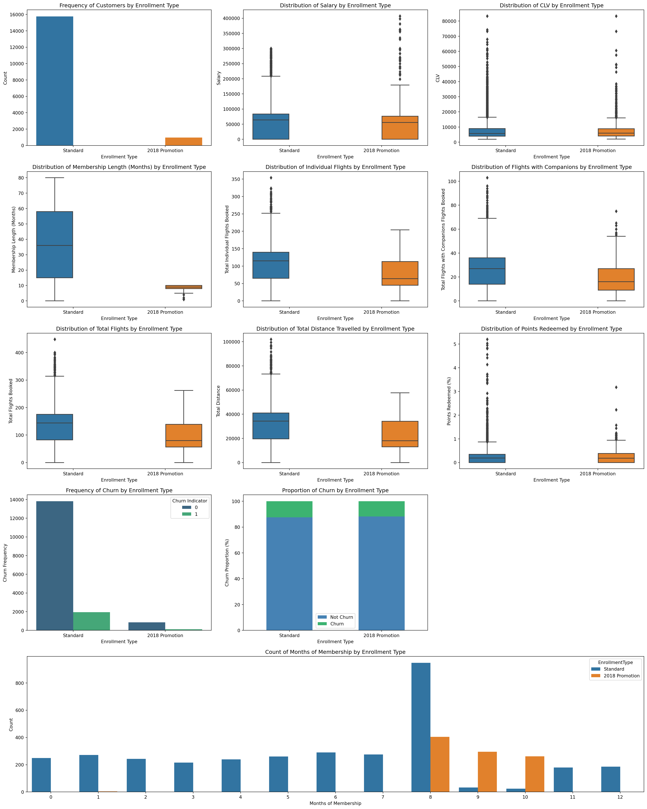
CLV Distribution
# Check distribution by CLV
plt.figure(figsize=(20,25))
plt.subplot(3, 3, 1)
sns.lineplot(data=cust_eda_loyalty_df, x='EnrollmentYear', y='CLV', ci=None, marker='o', sort=True)
plt.title('Customer Lifetime Value by Enrollment Year')
plt.xlabel('Enrollment Year')
plt.ylabel('Customer Lifetime Value')
plt.subplot(3, 3, 2)
sns.lineplot(data=cust_eda_loyalty_df, x='City', y='CLV', ci=None, marker='o', sort=True)
plt.title('Customer Lifetime Value by City')
plt.xlabel('City')
plt.ylabel('Customer Lifetime Value')
plt.xticks(rotation=80)
plt.subplot(3, 3, 4)
corr_coeff, _ = pearsonr(cust_eda_loyalty_df['Salary'], cust_eda_loyalty_df['CLV'])
sns.regplot(data=cust_eda_loyalty_df, x='Salary', y='CLV',
scatter_kws={'s': 50, 'alpha': 0.9, 'edgecolor': 'white'},
line_kws={'color': 'red'}, marker="o")
plt.text(0.1, 0.9, f'Correlation Coefficient: {corr_coeff:.2f}',
ha='left', va='baseline', transform=plt.gca().transAxes)
plt.title('Customer Lifetime Value by Salary')
plt.xlabel('Salary')
plt.ylabel('Customer Lifetime Value')
plt.xticks(rotation=80)
plt.subplot(3, 3, 5)
corr_coeff, _ = pearsonr(cust_eda_loyalty_df['TotalTotalFlights'], cust_eda_loyalty_df['CLV'])
sns.regplot(data=cust_eda_loyalty_df, x='TotalTotalFlights', y='CLV',
scatter_kws={'s': 50, 'alpha': 0.9, 'edgecolor': 'white'},
line_kws={'color': 'red'}, marker="o")
plt.text(0.1, 0.9, f'Correlation Coefficient: {corr_coeff:.2f}',
ha='left', va='baseline', transform=plt.gca().transAxes)
plt.title('Customer Lifetime Value by Total Flights Booked')
plt.xlabel('Total Flights Booked')
plt.ylabel('Customer Lifetime Value')
plt.xticks(rotation=80)
plt.subplot(3, 3, 6)
corr_coeff, _ = pearsonr(cust_eda_loyalty_df['TotalDistance'], cust_eda_loyalty_df['CLV'])
sns.regplot(data=cust_eda_loyalty_df, x='TotalDistance', y='CLV',
scatter_kws={'s': 50, 'alpha': 0.9, 'edgecolor': 'white'},
line_kws={'color': 'red'}, marker="o")
plt.text(0.1, 0.9, f'Correlation Coefficient: {corr_coeff:.2f}',
ha='left', va='baseline', transform=plt.gca().transAxes)
plt.title('Customer Lifetime Value by Total Distance Travelled')
plt.xlabel('Total Distance Travelled')
plt.ylabel('Customer Lifetime Value')
plt.xticks(rotation=80)
plt.subplot(3, 3, 7)
corr_coeff, _ = pearsonr(cust_eda_loyalty_df['MonthsOfMembership'], cust_eda_loyalty_df['CLV'])
sns.regplot(data=cust_eda_loyalty_df, x='MonthsOfMembership', y='CLV',
scatter_kws={'s': 50, 'alpha': 0.9, 'edgecolor': 'white'},
line_kws={'color': 'red'}, marker="o")
plt.text(0.1, 0.9, f'Correlation Coefficient: {corr_coeff:.2f}',
ha='left', va='baseline', transform=plt.gca().transAxes)
plt.title('Customer Lifetime Value by Months of Membership')
plt.xlabel('Months of Membership')
plt.ylabel('Customer Lifetime Value')
plt.xticks(rotation=80)
plt.subplot(3, 3, 8)
corr_coeff, _ = pearsonr(cust_eda_loyalty_df['TotalPointsAccumulated'], cust_eda_loyalty_df['CLV'])
sns.regplot(data=cust_eda_loyalty_df, x='TotalPointsAccumulated', y='CLV',
scatter_kws={'s': 50, 'alpha': 0.9, 'edgecolor': 'white'},
line_kws={'color': 'red'}, marker="o")
plt.text(0.1, 0.9, f'Correlation Coefficient: {corr_coeff:.2f}',
ha='left', va='baseline', transform=plt.gca().transAxes)
plt.title('Customer Lifetime Value by Total Points Accumulated')
plt.xlabel('Total Points Accumulated')
plt.ylabel('Customer Lifetime Value')
plt.xticks(rotation=80)
plt.show()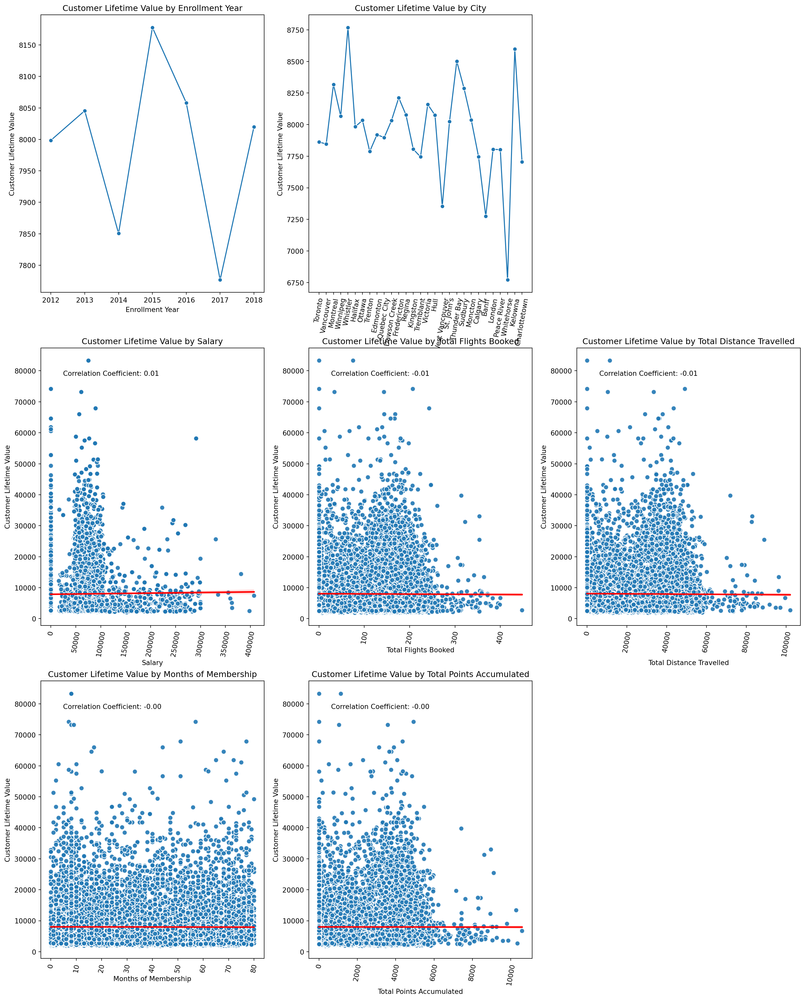
Potential Impact of 2018 Promotion
year_enrollment = cust_eda_loyalty_df.groupby('EnrollmentYear')['EnrollmentYear'].value_counts().reset_index()
year_enrollment['growth'] = year_enrollment['count'].pct_change()*100
year_enrollment = year_enrollment.fillna(0)
year_enrollment['EnrollmentYear'] = year_enrollment['EnrollmentYear'].astype('str')
year_enrollment| EnrollmentYear | count | growth | |
|---|---|---|---|
| 0 | 2012 | 1686 | 0.000000 |
| 1 | 2013 | 2397 | 42.170819 |
| 2 | 2014 | 2370 | -1.126408 |
| 3 | 2015 | 2331 | -1.645570 |
| 4 | 2016 | 2456 | 5.362505 |
| 5 | 2017 | 2487 | 1.262215 |
| 6 | 2018 | 3010 | 21.029353 |
fig, axs = plt.subplots(nrows = 1, ncols = 3, figsize = (15,5))
sns.lineplot(year_enrollment[~year_enrollment['EnrollmentYear'].isin(['2012','2013'])], x = 'EnrollmentYear', y='growth',label='growth', ax=axs[0])
axs[0].set_title('Percentage change in # of customers')
for x, y in zip(year_enrollment[~year_enrollment['EnrollmentYear'].isin(['2012','2013'])]['EnrollmentYear'], year_enrollment[~year_enrollment['EnrollmentYear'].isin(['2012','2013'])]['growth']):
axs[0].text(x, y, f'{y:.2f}%', ha='center', va='bottom')
sns.lineplot(year_enrollment[~year_enrollment['EnrollmentYear'].isin(['2012','2013'])], x = 'EnrollmentYear', y='count',label='count', ax=axs[1])
axs[1].set_title('Change in # of customers')
for x, y in zip(year_enrollment[~year_enrollment['EnrollmentYear'].isin(['2012','2013'])]['EnrollmentYear'], year_enrollment[~year_enrollment['EnrollmentYear'].isin(['2012','2013'])]['count']):
axs[1].text(x, y, f'{y}', ha='center', va='bottom')
pivot_plot = loyalty_df.groupby(['EnrollmentYear','EnrollmentType']).size().reset_index().pivot(columns='EnrollmentType',index = 'EnrollmentYear', values = 0)
# Reorder the columns
desired_order = ['Standard', '2018 Promotion']
pivot_plot = pivot_plot[desired_order]
# sns.countplot(loyalty_df[~loyalty_df['EnrollmentYear'].isin(['2012','2013'])], x = 'EnrollmentYear', hue = 'EnrollmentType', multiple='stack', hue_order=['2018 Promotion', 'Standard'])
pivot_plot.plot(kind='bar', stacked=True, ax = axs[2])
axs[2].set_title('Change in # of customers')
plt.tight_layout()
plt.show()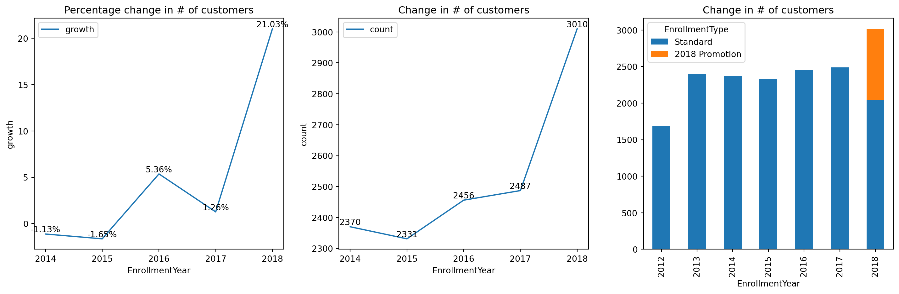
Number of Enrollment and Cancellation
enrollments = cust_eda_loyalty_df['EnrollmentDate'].dt.to_period('M').value_counts().sort_index()
cancellations = cust_eda_loyalty_df['CancellationDate'].dropna().dt.to_period('M').value_counts().sort_index()
plt.figure(figsize=(14, 8))
plt.plot(enrollments.index.astype(str), enrollments.values, label='Enrollments', marker='o')
plt.plot(cancellations.index.astype(str), cancellations.values, label='Cancellations', marker='o')
plt.title('Number of Enrollments and Cancellations Over Time')
plt.xlabel('Date (Year-Month)')
plt.ylabel('Count')
plt.xticks(rotation=90)
plt.legend()
plt.show()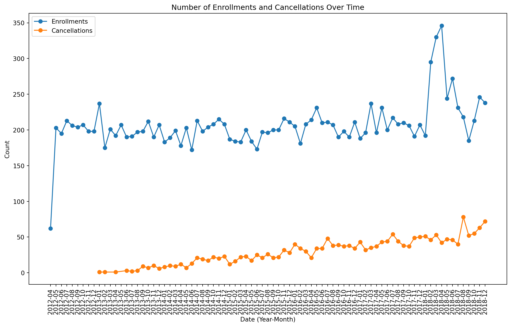
Churn Customers
# get all churn customers
churn_monthsofmembership = loyalty_df[loyalty_df['ChurnIndicator'].eq(1)]['MonthsOfMembership'].value_counts().reset_index()\
.sort_values(by='MonthsOfMembership')
# distribution of months of membership
plt.figure(figsize=(7,5))
sns.lineplot(data=churn_monthsofmembership, x='MonthsOfMembership', y='count')
plt.xlabel('Months of membership')
plt.ylabel('Number of customers')
plt.yticks(np.arange(0, 1400, 200))
plt.title('Distribution of all customers by months of membership')
plt.tight_layout()
plt.show()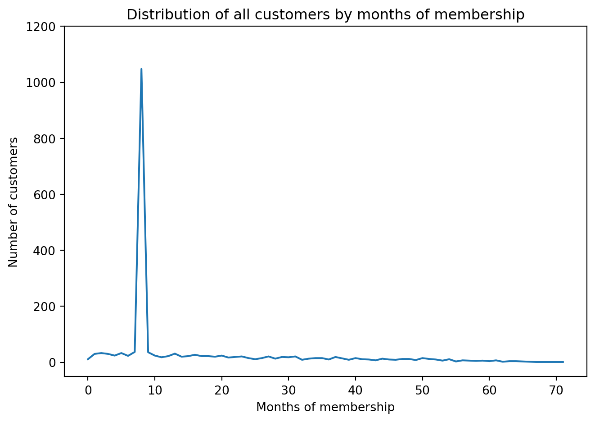
Hypothesis Testing
Kruskal-Wallis Test for Categorical Features and CLV
# Assuming 'continuous_var' is your continuous variable and 'nominal_var' is your nominal variable
def kruskal_wallis(df, cont_var, nom_var):
groups = [df[df[f'{nom_var}'] == category][f'{cont_var}'] for category in df[f'{nom_var}'].unique()]
kruskal_result = stats.kruskal(*groups)
print(f"Kruskal-Wallis H-statistic for {nom_var}: {kruskal_result.statistic}, p-value: {kruskal_result.pvalue}")for i in ['MaritalStatus', 'Education', 'LoyaltyCard']:
kruskal_wallis(loyalty_df, 'CLV', i)Kruskal-Wallis H-statistic for MaritalStatus: 32.67197728755935, p-value: 8.042114934653467e-08
Kruskal-Wallis H-statistic for Education: 82.73214822370325, p-value: 4.5915624634674436e-17
Kruskal-Wallis H-statistic for LoyaltyCard: 2204.896056033002, p-value: 0.0Encouraging Additional Expenditure with Coupon & Customer Segmentation
Creating a new data frame to prevent making unnecessary changes to the main data frame.
loyalty_df_cluster = loyalty_df.copy()Defining the Number of Clusters
# Extracting only the numerical features
cluster_features = ['Salary','CLV','MonthsOfMembership','TotalFlightsBooked',
'TotalFlightswithCompanions', 'TotalTotalFlights', 'TotalDistance',
'TotalPointsAccumulated', 'TotalPointsRedeemed',
'TotalDollarCostPointsRedeemed']# Select features for clustering
X = loyalty_df_cluster.loc[:,cluster_features]# Fit standard scaler
scaler = StandardScaler()
scaled_features = scaler.fit_transform(X)# Apply PCA to reduce dimensionality to 2D
pca = PCA(n_components=3)
X_pca = pca.fit_transform(scaled_features)
# Get the components
components = pca.components_
# Create a DataFrame to view component values in order to identify more important features for clustering
component_df = pd.DataFrame(components, columns=cluster_features, index=['PC1', 'PC2', 'PC3'])
component_df| Salary | CLV | MonthsOfMembership | TotalFlightsBooked | TotalFlightswithCompanions | TotalTotalFlights | TotalDistance | TotalPointsAccumulated | TotalPointsRedeemed | TotalDollarCostPointsRedeemed | |
|---|---|---|---|---|---|---|---|---|---|---|
| PC1 | 0.001779 | -0.002746 | 0.256215 | 0.391827 | 0.370512 | 0.399315 | 0.395435 | 0.394964 | 0.292972 | 0.293061 |
| PC2 | -0.040422 | 0.018458 | -0.217314 | -0.201056 | -0.061576 | -0.175131 | -0.183925 | -0.183603 | 0.635855 | 0.635660 |
| PC3 | 0.713647 | 0.699477 | 0.027271 | -0.008601 | -0.012483 | -0.009772 | -0.005293 | -0.000071 | 0.013082 | 0.013134 |
# Create a graph to determine the number of Principal Components and the features which contribute to its explained variance
explained_variance = pca.explained_variance_ratio_
plt.figure(figsize=(7,5))
plt.plot(range(1, len(explained_variance) + 1), explained_variance.cumsum(), marker='o')
plt.xlabel('Number of Principal Components')
plt.ylabel('Cumulative Explained Variance')
plt.show()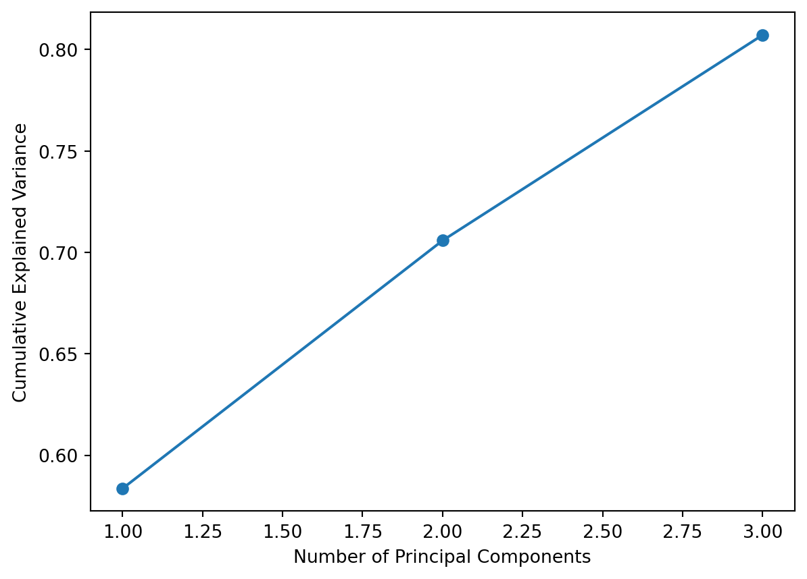
The first 2 Principal Components explain the majority of variance in the dataset. Only the features which are major contributors to the first 2 Princpal Components will be kept for clustering.
# Keeping only certain features based on their importance in the PCA
cluster_features = ['TotalFlightsBooked', 'TotalTotalFlights', 'TotalDistance',
'TotalPointsAccumulated', 'TotalPointsRedeemed',
'TotalDollarCostPointsRedeemed']# Select features for clustering
X = loyalty_df_cluster.loc[:,cluster_features]# Fit standard scaler
scaler = StandardScaler()
scaled_features = scaler.fit_transform(X)# Calculate within-cluster sum of squares (WCSS) for different values of k
wcss = []
for i in range(1, 11):
kmeans = KMeans(n_clusters=i, init='k-means++', max_iter=300, n_init=10, random_state=2024)
kmeans.fit(scaled_features)
wcss.append(kmeans.inertia_)
# Plot the elbow method curve
plt.figure(figsize=(7,5))
plt.plot(range(1, 11), wcss)
plt.title('Elbow Method')
plt.xlabel('Number of Clusters')
plt.ylabel('WCSS')
plt.show()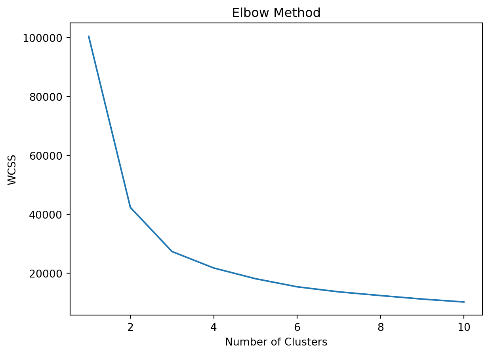
# Calculate silhouette coefficient for different values of k
silhoutte_coeff = []
for i in range(2, 11):
kmeans = KMeans(n_clusters=i, init='k-means++', max_iter=300, n_init=10, random_state=2024)
kmeans.fit(scaled_features)
silhoutte_coeff.append(silhouette_score(X,kmeans.labels_))
# Plot the elbow method curve
plt.figure(figsize=(7,5))
plt.plot(range(2, 11), silhoutte_coeff)
plt.title('Elbow Method')
plt.xlabel('Number of Clusters')
plt.ylabel('silhouette')
plt.show()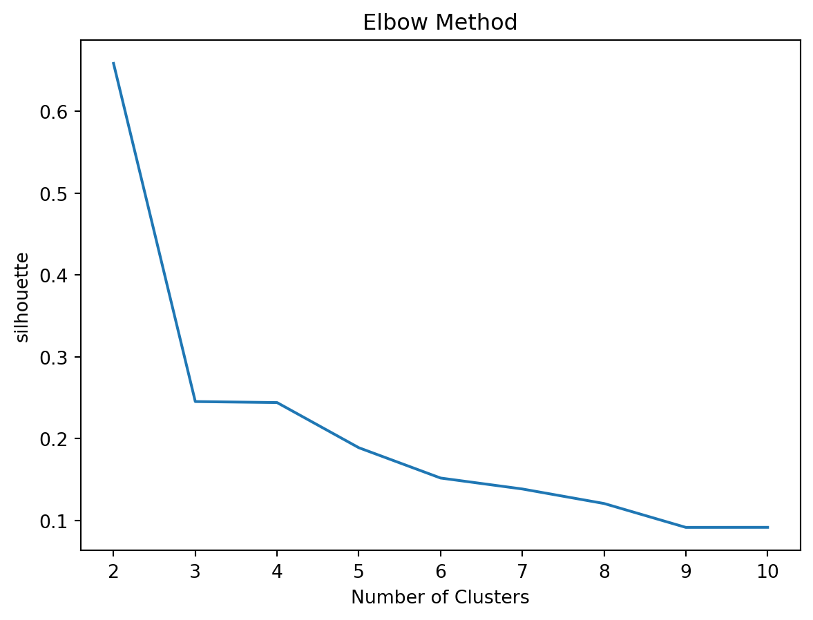
# Number of clusters
k = 3
# Initialize model
kmean = KMeans(n_clusters=k, init='k-means++', max_iter=300, n_init=10, random_state=2024)
# fit model
kmean.fit(scaled_features)
# get labels
cluster_labels = kmean.labels_
# Add cluster labels to the DF and adjust the cluster number so that they are more intuitive (cluster 0 will become cluster 1, for example)
loyalty_df_cluster['cluster'] = cluster_labels+1# Print the count of points in each cluster
pd.concat([loyalty_df_cluster['cluster'].value_counts().sort_index().reset_index(),
loyalty_df_cluster['cluster'].value_counts(normalize=True).sort_index().reset_index()],axis = 1)| cluster | count | cluster | proportion | |
|---|---|---|---|---|
| 0 | 1 | 4619 | 1 | 0.275975 |
| 1 | 2 | 4696 | 2 | 0.280576 |
| 2 | 3 | 7422 | 3 | 0.443449 |
# Graph by loyalty card
fig, axs = plt.subplots(nrows=3, ncols=2, figsize=(20, 20));
c = 0
for i in range(0,3):
for j in range(0, 2):
# This determines the x_lim and y_lim by considering the values of the features
cluster_0 = loyalty_df_cluster[loyalty_df_cluster['cluster'] == 1][cluster_features[c]]
cluster_1 = loyalty_df_cluster[loyalty_df_cluster['cluster'] == 2][cluster_features[c]]
cluster_2 = loyalty_df_cluster[loyalty_df_cluster['cluster'] == 3][cluster_features[c]]
cluster_3 = loyalty_df_cluster[loyalty_df_cluster['cluster'] == 4][cluster_features[c]]
cluster_4 = loyalty_df_cluster[loyalty_df_cluster['cluster'] == 5][cluster_features[c]]
cluster_5 = loyalty_df_cluster[loyalty_df_cluster['cluster'] == 6][cluster_features[c]]
min_c = min(cluster_0.min(),cluster_1.min(),cluster_2.min(),cluster_3.min(),cluster_4.min(),cluster_5.min())
max_c = max(cluster_0.max(),cluster_1.max(),cluster_2.max(),cluster_3.max(),cluster_4.max(),cluster_5.max())
# This automatically divides the feature into bins based on the entire dataset
num_bin = list(np.histogram(loyalty_df_cluster[cluster_features[c]],bins=10)[1])
sns.histplot(loyalty_df_cluster[loyalty_df_cluster['cluster']==1], x = cluster_features[c], ax = axs[i,j], stat = 'probability', alpha = 0.3, bins = num_bin, label = 'cluster_1')
sns.histplot(loyalty_df_cluster[loyalty_df_cluster['cluster']==2], x = cluster_features[c], ax = axs[i,j], stat = 'probability', alpha = 0.3, bins = num_bin, label = 'cluster_2')
sns.histplot(loyalty_df_cluster[loyalty_df_cluster['cluster']==3], x = cluster_features[c], ax = axs[i,j], stat = 'probability', alpha = 0.3, bins = num_bin, label = 'cluster_3')
sns.histplot(loyalty_df_cluster[loyalty_df_cluster['cluster']==4], x = cluster_features[c], ax = axs[i,j], stat = 'probability', alpha = 0.3, bins = num_bin, label = 'cluster_4')
sns.histplot(loyalty_df_cluster[loyalty_df_cluster['cluster']==5], x = cluster_features[c], ax = axs[i,j], stat = 'probability', alpha = 0.3, bins = num_bin, label = 'cluster_5')
sns.histplot(loyalty_df_cluster[loyalty_df_cluster['cluster']==6], x = cluster_features[c], ax = axs[i,j], stat = 'probability', alpha = 0.3, bins = num_bin, label = 'cluster_6')
axs[i, j].set_xlim(min_c,max_c)
axs[i, j].legend(title='Cluster')
c += 1
plt.tight_layout()
plt.show()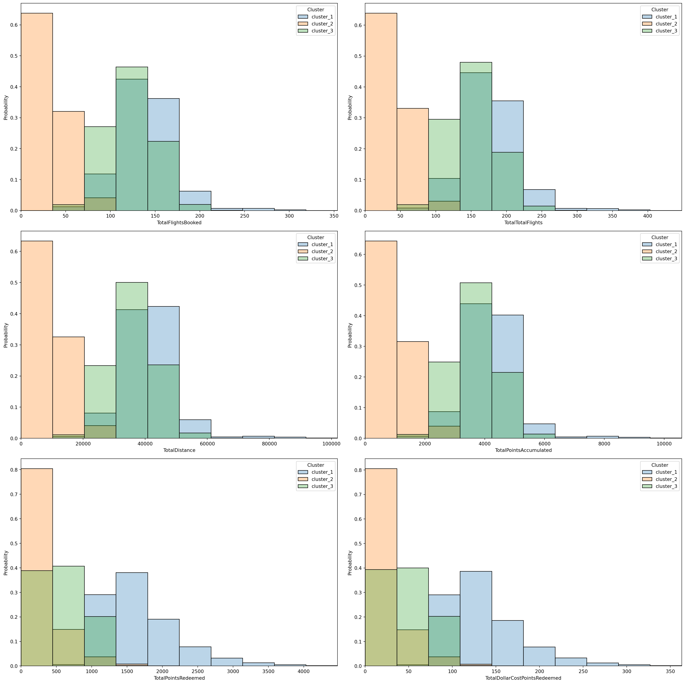
# numerical features for aggregation
num_features = ['Salary','CLV','MonthsOfMembership','TotalFlightsBooked',
'TotalFlightswithCompanions', 'TotalTotalFlights', 'TotalDistance',
'TotalPointsAccumulated', 'TotalPointsRedeemed',
'TotalDollarCostPointsRedeemed']median_clusters = loyalty_df_cluster.groupby('cluster')[num_features].median()# Function to apply colors based on value positions
def highlight_positions(s):
is_min = s.isin(s.nsmallest(1))
is_max = s.isin(s.nlargest(1))
is_mid = ~is_min & ~is_max
result = ['background-color: #dddcdc' if v else '' for v in is_min]
result = ['background-color: #ffaf93' if v else res for v, res in zip(is_max, result)]
result = ['background-color: #93fff5' if v else res for v, res in zip(is_mid, result)]
return resultmedian_clusters = median_clusters.style.apply(highlight_positions)median_clusters| Salary | CLV | MonthsOfMembership | TotalFlightsBooked | TotalFlightswithCompanions | TotalTotalFlights | TotalDistance | TotalPointsAccumulated | TotalPointsRedeemed | TotalDollarCostPointsRedeemed | |
|---|---|---|---|---|---|---|---|---|---|---|
| cluster | ||||||||||
| 1 | 63853.000000 | 5773.900000 | 47.000000 | 137.000000 | 36.000000 | 174.000000 | 40788.000000 | 4168.250000 | 1554.000000 | 126.000000 |
| 2 | 62866.000000 | 5796.580000 | 8.000000 | 21.000000 | 4.000000 | 27.000000 | 6152.000000 | 616.500000 | 0.000000 | 0.000000 |
| 3 | 63988.000000 | 5769.755000 | 43.000000 | 122.000000 | 28.000000 | 151.000000 | 35970.000000 | 3675.200000 | 523.000000 | 42.000000 |
fig, axs = plt.subplots(nrows = 3, ncols= 2, figsize = (20,20))
c = 0
for i in range(0,3):
for j in range(0,2):
if i*j == 2:
sns.scatterplot(loyalty_df_cluster, x = cluster_features[0], y = cluster_features[-1], hue='cluster', ax = axs[i,j])
else:
sns.scatterplot(loyalty_df_cluster, x = cluster_features[c], y = cluster_features[c+1], hue='cluster', ax = axs[i,j])
c += 1
plt.tight_layout()
plt.show()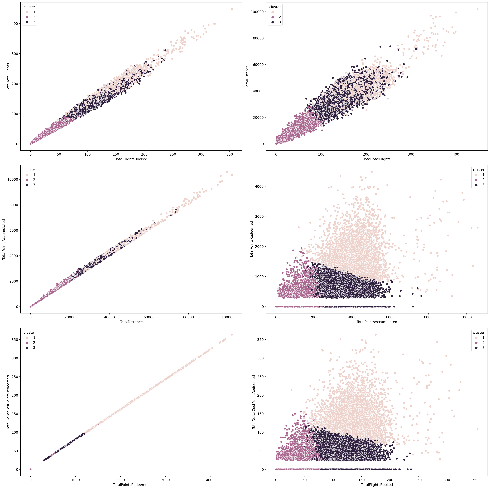
Determining Optimal Coupon Values by different segmentation methods
loyalty_df_metric = loyalty_df_cluster.copy()# Remove all customers with 0 months of membership and 0 flight flown
loyalty_df_metric = loyalty_df_metric[loyalty_df_metric['TotalDistance']!=0]# Calculate Customers' Average Monthly CLV
loyalty_df_metric['MonthsOfMembership'] = loyalty_df_metric['MonthsOfMembership'].apply(lambda x: 1 if x== 0 else x)
loyalty_df_metric['AvgCLV'] = loyalty_df_metric['CLV']/loyalty_df_metric['MonthsOfMembership']# Calculate Customers' Unit Revenue based on the Total Flights over the last 2 years
loyalty_df_metric['UnitRevenue'] = (loyalty_df_metric['AvgCLV']*24)/loyalty_df_metric['TotalTotalFlights']
loyalty_df_metric['UnitRevenue'] = np.where(
(loyalty_df_metric['MonthsOfMembership'] == 1) & (loyalty_df_metric['TotalTotalFlights']==1),
loyalty_df_metric['AvgCLV'],
loyalty_df_metric['UnitRevenue']
)Promotions based on no differentiation (one large customer group)
# This function will determine the optimal customer index for the optimal coupon value
def promo_ob3_v2(customers):
marketing_cost = 0.2
l = np.array(customers['UnitRevenue'].sort_values())
return l[np.argmax(np.add.accumulate(l) - l*marketing_cost*len(customers))]*marketing_cost# Calculate profit and revenue based on no segmentation
m_cost = 0.2
revenue_unsegmented = sum(loyalty_df_metric['UnitRevenue'][loyalty_df_metric['UnitRevenue']*m_cost <= promo_ob3_v2(loyalty_df_metric)])
profit_unsegmented = revenue_unsegmented - promo_ob3_v2(loyalty_df_metric)*len(loyalty_df_metric)
print(f"Without customer segmentation:\nProfit is {profit_unsegmented}")
print(f"Profit margin is {profit_unsegmented/revenue_unsegmented}")
print(f'Total revenue is {revenue_unsegmented}')
print(f'Total cost is:', promo_ob3_v2(loyalty_df_metric)*len(loyalty_df_metric))Without customer segmentation:
Profit is 38505.985186105885
Profit margin is 0.17774345978361278
Total revenue is 216637.9861907919
Total cost is: 178132.00100468603Differentiated promotions based on categorical characteristics
loyalty_df_metric['target_customer'] = loyalty_df_metric['Education'] + loyalty_df_metric['LoyaltyCard'] + loyalty_df_metric['MaritalStatus']
loyalty_df_metric['target_customer_groups'] = loyalty_df_metric['target_customer'].apply(lambda x: 'target' if x == 'BachelorAuroraMarried' else 'other')labels = list(set(loyalty_df_metric['target_customer']))# Calculate profit and revenue based on grouped segmentations
def promo_ob3_v3(customers, group_label):
marketing_cost = 0.2
l = np.array(customers[customers['target_customer']==group_label]['UnitRevenue'].sort_values())
return l[np.argmax(np.add.accumulate(l) - l*marketing_cost*len(customers[customers['target_customer']==group_label]))]*marketing_costprofits = []
revenue = []
cost = []
for i in labels:
m_cost = 0.2
revenue_segmented = sum(loyalty_df_metric['UnitRevenue'][(loyalty_df_metric['UnitRevenue']*m_cost <= promo_ob3_v3(loyalty_df_metric,i)) & (loyalty_df_metric['target_customer']==i)])
profit_segmented = revenue_segmented - promo_ob3_v3(loyalty_df_metric,i)*len(loyalty_df_metric[loyalty_df_metric['target_customer']==i])
cost.append(promo_ob3_v3(loyalty_df_metric,i)*len(loyalty_df_metric[loyalty_df_metric['target_customer']==i]))
revenue.append(revenue_segmented)
profits.append(profit_segmented)
print(f"With customer segmentation:\nProfit is {sum(profits)}")
print(f"Profit margin is {sum(profits)/sum(revenue)}")
print(f'Total revenue is {sum(revenue)}')
print(f'Total cost is {sum(cost)}')With customer segmentation:
Profit is 50930.07800271747
Profit margin is 0.2185888835412031
Total revenue is 232994.8219581686
Total cost is 182064.743955451Differentiated promotions based on k-means clusters
labels = [1,2,3]# Calculate profit and revenue based on grouped segmentations
def promo_ob3_v3(customers, cluster_num):
marketing_cost = 0.2
l = np.array(customers[customers['cluster']==cluster_num]['UnitRevenue'].sort_values())
return l[np.argmax(np.add.accumulate(l) - l*marketing_cost*len(customers[customers['cluster']==cluster_num]))]*marketing_costprofits = []
revenue = []
cost = []
for i in labels:
m_cost = 0.2
revenue_segmented = sum(loyalty_df_metric['UnitRevenue'][(loyalty_df_metric['UnitRevenue']*m_cost <= promo_ob3_v3(loyalty_df_metric,i)) & (loyalty_df_metric['cluster']==i)])
profit_segmented = revenue_segmented - promo_ob3_v3(loyalty_df_metric,i)*len(loyalty_df_metric[loyalty_df_metric['cluster']==i])
cost.append(promo_ob3_v3(loyalty_df_metric,i)*len(loyalty_df_metric[loyalty_df_metric['cluster']==i]))
revenue.append(revenue_segmented)
profits.append(profit_segmented)
print(f"With customer segmentation:\nProfit is {sum(profits)}")
print(f"Profit margin is {sum(profits)/sum(revenue)}")
print(f'Total revenue is {sum(revenue)}')
print(f'Total cost is {sum(cost)}')With customer segmentation:
Profit is 185340.79182657355
Profit margin is 0.18142958634091688
Total revenue is 1021557.7049175833
Total cost is 836216.9130910097Crafting a new metric to balance raw profit and profit margin
Instead of just measuring solutions based on profit margin as a metric, we can create a new metric to add in the raw profit amount as an additional factor to add nuance to the metric. This can be caculated with the following formula:
\(Margin Profit Score = log_{10}(Profit^2)*\frac{Profit}{Revenue}\)
test_df = pd.DataFrame({'method':['m1','m2','m3'],
'profit':[38505,50930,185147],
'revenue':[216637,232994,1021297]})test_df['log'] = np.log(50*test_df['profit'])
test_df['margin'] = (test_df['profit']/test_df['revenue'])
weight = 2
test_df['margin_profit_score'] = (np.log10(test_df['profit'])**weight)*((test_df['profit'])/test_df['revenue'])
test_df| method | profit | revenue | log | margin | margin_profit_score | |
|---|---|---|---|---|---|---|
| 0 | m1 | 38505 | 216637 | 14.470566 | 0.177740 | 3.737327 |
| 1 | m2 | 50930 | 232994 | 14.750230 | 0.218589 | 4.842978 |
| 2 | m3 | 185147 | 1021297 | 16.040928 | 0.181286 | 5.030098 |
Using this new Margin Profit Score, we see that the segmentation based on K-means clustering (m3) now become the most optimal solution because it has the highest amount of raw profit, but because of our logarithmic scaling, it is not that much larger than segmentation by categorical features because profit margin still plays a large role.
What we can learn from this slight departure is that a more customized metric might be better able to capture the appropriate mix of raw profit and profit margin that the airline desires.